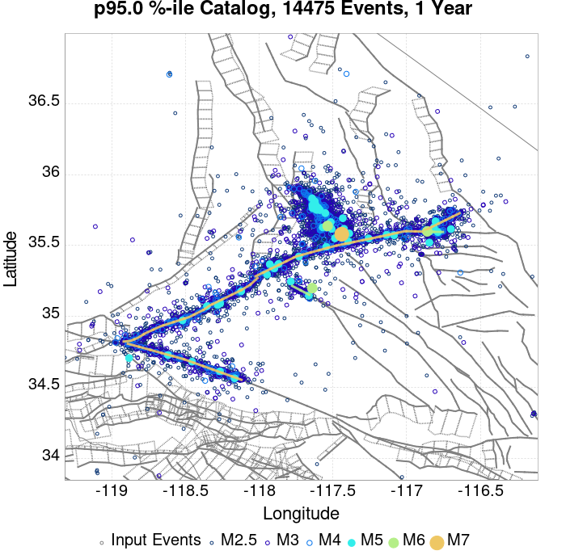
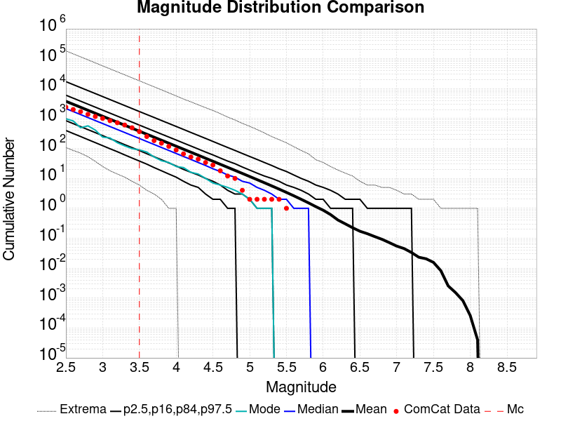
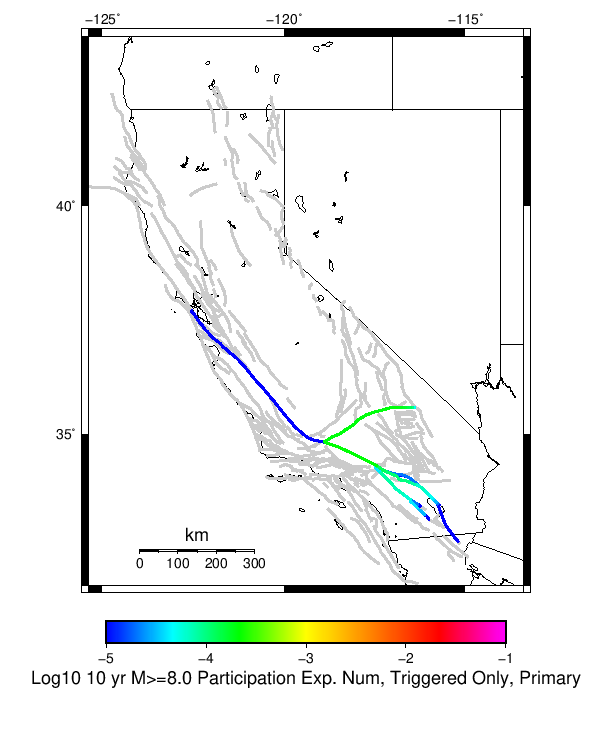
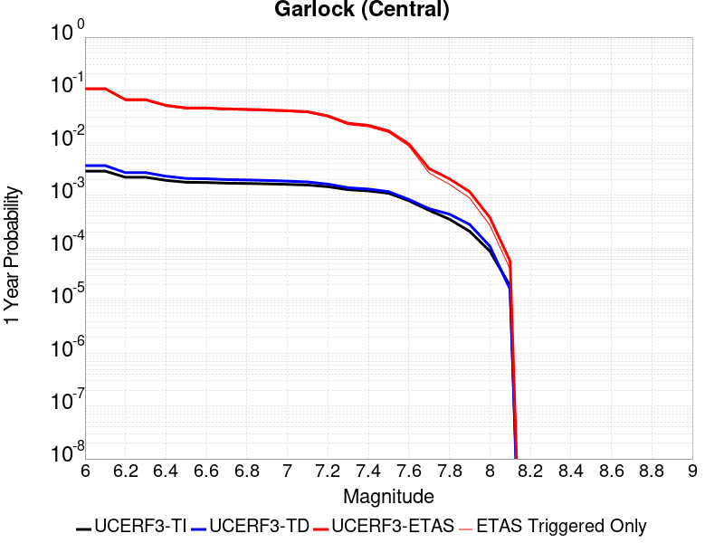
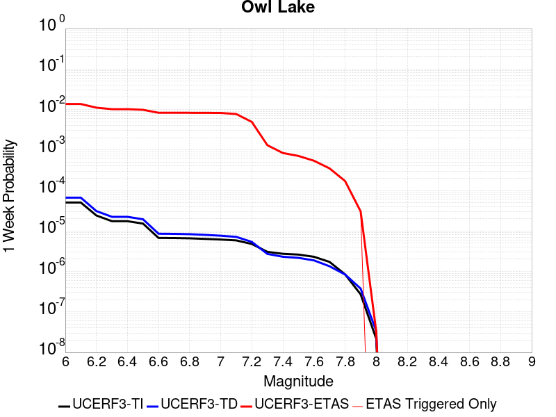
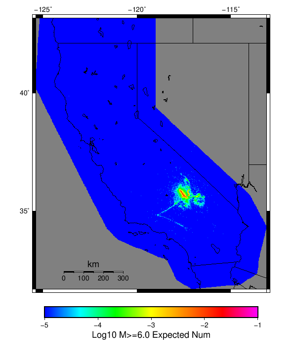

| ComCat M7.1 (ci38457511), ShakeMap Surfaces, kCOV=1.5 | |
|---|---|
| Num Simulations | 16767 (incomplete) |
| Start Time | 2019/07/06 03:19:54 UTC |
| Start Time Epoch Milliseconds | 1562383194040 |
| Duration | 10 Years |
| Includes Spontaneous? | false |
| Trigger Ruptures | 283 Trigger Ruptures |
| First: M3.98 at 2019/07/04 17:02:55 UTC | |
| Last: M7.1 at 2019/07/06 03:19:53 UTC | |
| Largest: M7.1 at 2019/07/06 03:19:53 UTC | |
| Trigger Ruptures | (none) |
| Config Generated With | u3etas_comcat_event_config_builder.sh --event-id ci38457511 --mag-complete 3.5 --num-simulations 100000 --days-before 7 --etas-k-cov 1.5 --finite-surf-shakemap --finite-surf-shakemap-min-mag 5 --hpc-site USC_HPC --nodes 36 --hours 24 --queue scec |
| Magnitude | 1 Hour Prob | 1 Day Prob | 1 Week Prob | 1 Month Prob | 1 Year Prob | 10 Year Prob |
|---|---|---|---|---|---|---|
| M≥4 | 0.965 (96.53%), CI95%=[96.24% 96.80%] | 0.996 (99.64%), CI95%=[99.53% 99.72%] | 0.999 (99.94%), CI95%=[99.89% 99.97%] | 1.000 (99.99%), CI95%=[99.96% 100.00%] | 1.000 (100.00%), CI95%=[99.97% 100.00%] | 1.000 (100.00%), CI95%=[99.97% 100.00%] |
| M≥4.5 | 0.829 (82.93%), CI95%=[82.35% 83.50%] | 0.956 (95.63%), CI95%=[95.31% 95.94%] | 0.984 (98.41%), CI95%=[98.20% 98.59%] | 0.992 (99.15%), CI95%=[99.00% 99.28%] | 0.997 (99.74%), CI95%=[99.64% 99.81%] | 0.999 (99.90%), CI95%=[99.83% 99.94%] |
| M≥5 | 0.570 (56.99%), CI95%=[56.24% 57.74%] | 0.800 (79.98%), CI95%=[79.37% 80.59%] | 0.879 (87.94%), CI95%=[87.44% 88.43%] | 0.916 (91.64%), CI95%=[91.21% 92.05%] | 0.954 (95.41%), CI95%=[95.08% 95.72%] | 0.970 (96.98%), CI95%=[96.71% 97.23%] |
| M≥5.5 | 0.283 (28.31%), CI95%=[27.63% 29.00%] | 0.513 (51.30%), CI95%=[50.54% 52.06%] | 0.616 (61.62%), CI95%=[60.88% 62.36%] | 0.682 (68.17%), CI95%=[67.46% 68.87%] | 0.765 (76.47%), CI95%=[75.81% 77.10%] | 0.814 (81.36%), CI95%=[80.76% 81.94%] |
| M≥6 | 0.095 (9.52%), CI95%=[9.08% 9.98%] | 0.219 (21.88%), CI95%=[21.25% 22.51%] | 0.297 (29.65%), CI95%=[28.96% 30.35%] | 0.353 (35.27%), CI95%=[34.54% 36.00%] | 0.432 (43.18%), CI95%=[42.43% 43.93%] | 0.494 (49.41%), CI95%=[48.65% 50.17%] |
| M≥6.5 | 0.024 (2.42%), CI95%=[2.20% 2.67%] | 0.061 (6.14%), CI95%=[5.78% 6.51%] | 0.088 (8.80%), CI95%=[8.37% 9.24%] | 0.111 (11.05%), CI95%=[10.58% 11.54%] | 0.145 (14.55%), CI95%=[14.02% 15.09%] | 0.178 (17.79%), CI95%=[17.22% 18.38%] |
| M≥7 | 8.71E-3 (0.87%), CI95%=[0.74% 1.03%] | 0.023 (2.25%), CI95%=[2.04% 2.49%] | 0.032 (3.24%), CI95%=[2.98% 3.52%] | 0.040 (4.04%), CI95%=[3.75% 4.35%] | 0.052 (5.24%), CI95%=[4.91% 5.59%] | 0.066 (6.57%), CI95%=[6.20% 6.96%] |
| M≥7.1 | 7.40E-3 (0.74%), CI95%=[0.62% 0.88%] | 0.019 (1.92%), CI95%=[1.72% 2.14%] | 0.027 (2.74%), CI95%=[2.50% 3.00%] | 0.034 (3.36%), CI95%=[3.10% 3.65%] | 0.045 (4.47%), CI95%=[4.16% 4.79%] | 0.056 (5.61%), CI95%=[5.27% 5.97%] |
| M≥7.5 | 2.80E-3 (0.28%), CI95%=[0.21% 0.38%] | 6.92E-3 (0.69%), CI95%=[0.57% 0.83%] | 9.30E-3 (0.93%), CI95%=[0.79% 1.09%] | 0.011 (1.12%), CI95%=[0.97% 1.30%] | 0.016 (1.60%), CI95%=[1.42% 1.80%] | 0.021 (2.15%), CI95%=[1.94% 2.38%] |
| M≥8 | 5.96E-5 (0.01%), CI95%=[0.00% 0.04%] | 1.19E-4 (0.01%), CI95%=[0.00% 0.05%] | 1.19E-4 (0.01%), CI95%=[0.00% 0.05%] | 1.19E-4 (0.01%), CI95%=[0.00% 0.05%] | 1.19E-4 (0.01%), CI95%=[0.00% 0.05%] | 2.98E-4 (0.03%), CI95%=[0.01% 0.07%] |
Legend
| Mag | Mean | 2.5 %ile | 97.5 %ile | Median | Mode | 10 yr Probability | 10 yr Supra-Seis Prob | Primary Aftershocks Mean |
|---|---|---|---|---|---|---|---|---|
| M≥2.5 | 5256.242 | 537.000 | 25120.000 | 2880.000 | 1196.000 | 1.000 (100.00%), CI95%=[99.97% 100.00%] | 0.255 (25.54%), CI95%=[24.89% 26.21%] | 2369.341 |
| M≥2.6 | 4175.184 | 428.000 | 19931.000 | 2289.000 | 1603.000 | 1.000 (100.00%), CI95%=[99.97% 100.00%] | 0.255 (25.54%), CI95%=[24.89% 26.21%] | 1882.044 |
| M≥2.7 | 3315.978 | 337.000 | 15798.000 | 1820.000 | 736.000 | 1.000 (100.00%), CI95%=[99.97% 100.00%] | 0.255 (25.54%), CI95%=[24.89% 26.21%] | 1494.777 |
| M≥2.8 | 2633.909 | 266.000 | 12541.000 | 1444.000 | 569.000 | 1.000 (100.00%), CI95%=[99.97% 100.00%] | 0.255 (25.54%), CI95%=[24.89% 26.21%] | 1187.233 |
| M≥2.9 | 2092.257 | 212.000 | 9993.000 | 1149.000 | 421.000 | 1.000 (100.00%), CI95%=[99.97% 100.00%] | 0.255 (25.54%), CI95%=[24.89% 26.21%] | 943.118 |
| M≥3 | 1661.690 | 167.000 | 7910.000 | 912.000 | 374.000 | 1.000 (100.00%), CI95%=[99.97% 100.00%] | 0.255 (25.54%), CI95%=[24.89% 26.21%] | 748.979 |
| M≥3.1 | 1319.892 | 132.000 | 6281.000 | 724.000 | 321.000 | 1.000 (100.00%), CI95%=[99.97% 100.00%] | 0.255 (25.54%), CI95%=[24.89% 26.21%] | 594.873 |
| M≥3.2 | 1048.347 | 106.000 | 5000.000 | 575.000 | 238.000 | 1.000 (100.00%), CI95%=[99.97% 100.00%] | 0.255 (25.54%), CI95%=[24.89% 26.21%] | 472.539 |
| M≥3.3 | 832.636 | 83.000 | 3953.000 | 458.000 | 175.000 | 1.000 (100.00%), CI95%=[99.97% 100.00%] | 0.255 (25.54%), CI95%=[24.89% 26.21%] | 375.323 |
| M≥3.4 | 661.351 | 65.000 | 3138.000 | 363.000 | 143.000 | 1.000 (100.00%), CI95%=[99.97% 100.00%] | 0.255 (25.54%), CI95%=[24.89% 26.21%] | 298.106 |
| M≥3.5 | 525.233 | 52.000 | 2507.000 | 288.000 | 93.000 | 1.000 (100.00%), CI95%=[99.97% 100.00%] | 0.255 (25.54%), CI95%=[24.89% 26.21%] | 236.752 |
| M≥3.6 | 417.103 | 41.000 | 1983.000 | 229.000 | 96.000 | 1.000 (100.00%), CI95%=[99.97% 100.00%] | 0.255 (25.54%), CI95%=[24.89% 26.21%] | 187.991 |
| M≥3.7 | 331.248 | 32.000 | 1586.000 | 182.000 | 64.000 | 1.000 (100.00%), CI95%=[99.97% 100.00%] | 0.255 (25.54%), CI95%=[24.89% 26.21%] | 149.295 |
| M≥3.8 | 262.902 | 25.000 | 1265.000 | 145.000 | 48.000 | 1.000 (100.00%), CI95%=[99.97% 100.00%] | 0.255 (25.54%), CI95%=[24.89% 26.21%] | 118.475 |
| M≥3.9 | 208.763 | 19.000 | 1003.000 | 115.000 | 55.000 | 1.000 (100.00%), CI95%=[99.97% 100.00%] | 0.255 (25.54%), CI95%=[24.89% 26.21%] | 94.079 |
| M≥4 | 165.798 | 15.000 | 797.000 | 91.000 | 32.000 | 1.000 (100.00%), CI95%=[99.97% 100.00%] | 0.255 (25.54%), CI95%=[24.89% 26.21%] | 74.660 |
| M≥4.1 | 131.632 | 11.000 | 638.000 | 72.000 | 37.000 | 1.000 (100.00%), CI95%=[99.97% 100.00%] | 0.255 (25.54%), CI95%=[24.89% 26.21%] | 59.265 |
| M≥4.2 | 104.409 | 9.000 | 503.000 | 57.000 | 24.000 | 1.000 (100.00%), CI95%=[99.97% 100.00%] | 0.255 (25.54%), CI95%=[24.89% 26.21%] | 47.002 |
| M≥4.3 | 82.773 | 7.000 | 401.000 | 46.000 | 19.000 | 1.000 (99.99%), CI95%=[99.95% 100.00%] | 0.255 (25.54%), CI95%=[24.89% 26.21%] | 37.271 |
| M≥4.4 | 65.663 | 5.000 | 316.000 | 36.000 | 11.000 | 1.000 (99.96%), CI95%=[99.91% 99.98%] | 0.255 (25.54%), CI95%=[24.89% 26.21%] | 29.552 |
| M≥4.5 | 52.038 | 4.000 | 252.000 | 29.000 | 10.000 | 0.999 (99.90%), CI95%=[99.83% 99.94%] | 0.255 (25.54%), CI95%=[24.89% 26.21%] | 23.425 |
| M≥4.6 | 41.231 | 3.000 | 201.000 | 23.000 | 8.000 | 0.998 (99.83%), CI95%=[99.75% 99.88%] | 0.255 (25.54%), CI95%=[24.89% 26.21%] | 18.555 |
| M≥4.7 | 32.626 | 2.000 | 159.000 | 18.000 | 7.000 | 0.995 (99.52%), CI95%=[99.40% 99.61%] | 0.255 (25.54%), CI95%=[24.89% 26.21%] | 14.676 |
| M≥4.8 | 25.782 | 1.000 | 127.000 | 14.000 | 5.000 | 0.990 (99.02%), CI95%=[98.86% 99.16%] | 0.255 (25.54%), CI95%=[24.89% 26.21%] | 11.594 |
| M≥4.9 | 20.368 | 1.000 | 101.000 | 11.000 | 3.000 | 0.982 (98.17%), CI95%=[97.96% 98.37%] | 0.255 (25.54%), CI95%=[24.89% 26.21%] | 9.168 |
| M≥5 | 16.053 | 0.000 | 79.000 | 9.000 | 3.000 | 0.970 (96.98%), CI95%=[96.71% 97.23%] | 0.255 (25.54%), CI95%=[24.89% 26.21%] | 7.235 |
| M≥5.1 | 12.644 | 0.000 | 62.000 | 7.000 | 2.000 | 0.952 (95.19%), CI95%=[94.86% 95.51%] | 0.255 (25.54%), CI95%=[24.89% 26.21%] | 5.694 |
| M≥5.2 | 9.928 | 0.000 | 49.000 | 5.000 | 1.000 | 0.927 (92.69%), CI95%=[92.29% 93.08%] | 0.255 (25.54%), CI95%=[24.89% 26.21%] | 4.465 |
| M≥5.3 | 7.796 | 0.000 | 38.000 | 4.000 | 1.000 | 0.896 (89.60%), CI95%=[89.12% 90.05%] | 0.255 (25.54%), CI95%=[24.89% 26.21%] | 3.502 |
| M≥5.4 | 6.077 | 0.000 | 30.000 | 3.000 | 1.000 | 0.859 (85.92%), CI95%=[85.38% 86.44%] | 0.255 (25.54%), CI95%=[24.89% 26.21%] | 2.736 |
| M≥5.5 | 4.719 | 0.000 | 23.000 | 3.000 | 0.000 | 0.814 (81.36%), CI95%=[80.76% 81.94%] | 0.255 (25.54%), CI95%=[24.89% 26.21%] | 2.123 |
| M≥5.6 | 3.650 | 0.000 | 18.000 | 2.000 | 0.000 | 0.762 (76.19%), CI95%=[75.54% 76.83%] | 0.255 (25.54%), CI95%=[24.89% 26.21%] | 1.647 |
| M≥5.7 | 2.798 | 0.000 | 14.000 | 1.000 | 0.000 | 0.703 (70.27%), CI95%=[69.57% 70.96%] | 0.255 (25.54%), CI95%=[24.89% 26.21%] | 1.264 |
| M≥5.8 | 2.119 | 0.000 | 11.000 | 1.000 | 0.000 | 0.634 (63.44%), CI95%=[62.71% 64.17%] | 0.255 (25.54%), CI95%=[24.89% 26.21%] | 0.959 |
| M≥5.9 | 1.585 | 0.000 | 9.000 | 1.000 | 0.000 | 0.566 (56.55%), CI95%=[55.80% 57.30%] | 0.255 (25.54%), CI95%=[24.88% 26.21%] | 0.721 |
| M≥6 | 1.209 | 0.000 | 7.000 | 0.000 | 0.000 | 0.494 (49.41%), CI95%=[48.65% 50.17%] | 0.255 (25.53%), CI95%=[24.87% 26.20%] | 0.545 |
| M≥6.1 | 0.875 | 0.000 | 5.000 | 0.000 | 0.000 | 0.420 (41.96%), CI95%=[41.21% 42.71%] | 0.224 (22.37%), CI95%=[21.74% 23.01%] | 0.401 |
| M≥6.2 | 0.576 | 0.000 | 4.000 | 0.000 | 0.000 | 0.328 (32.75%), CI95%=[32.05% 33.47%] | 0.180 (18.02%), CI95%=[17.44% 18.61%] | 0.266 |
| M≥6.3 | 0.429 | 0.000 | 3.000 | 0.000 | 0.000 | 0.270 (27.02%), CI95%=[26.35% 27.70%] | 0.157 (15.70%), CI95%=[15.16% 16.27%] | 0.199 |
| M≥6.4 | 0.324 | 0.000 | 2.000 | 0.000 | 0.000 | 0.219 (21.87%), CI95%=[21.25% 22.51%] | 0.138 (13.84%), CI95%=[13.33% 14.38%] | 0.149 |
| M≥6.5 | 0.249 | 0.000 | 2.000 | 0.000 | 0.000 | 0.178 (17.79%), CI95%=[17.22% 18.38%] | 0.122 (12.23%), CI95%=[11.74% 12.73%] | 0.115 |
| M≥6.6 | 0.199 | 0.000 | 2.000 | 0.000 | 0.000 | 0.154 (15.42%), CI95%=[14.88% 15.98%] | 0.114 (11.36%), CI95%=[10.89% 11.85%] | 0.095 |
| M≥6.7 | 0.159 | 0.000 | 1.000 | 0.000 | 0.000 | 0.128 (12.82%), CI95%=[12.32% 13.34%] | 0.100 (10.00%), CI95%=[9.55% 10.47%] | 0.079 |
| M≥6.8 | 0.126 | 0.000 | 1.000 | 0.000 | 0.000 | 0.108 (10.76%), CI95%=[10.30% 11.24%] | 0.088 (8.77%), CI95%=[8.35% 9.21%] | 0.064 |
| M≥6.9 | 0.094 | 0.000 | 1.000 | 0.000 | 0.000 | 0.084 (8.43%), CI95%=[8.01% 8.86%] | 0.071 (7.10%), CI95%=[6.72% 7.50%] | 0.050 |
| M≥7 | 0.071 | 0.000 | 1.000 | 0.000 | 0.000 | 0.066 (6.57%), CI95%=[6.20% 6.96%] | 0.058 (5.77%), CI95%=[5.43% 6.14%] | 0.038 |
| M≥7.1 | 0.059 | 0.000 | 1.000 | 0.000 | 0.000 | 0.056 (5.61%), CI95%=[5.27% 5.97%] | 0.051 (5.09%), CI95%=[4.77% 5.44%] | 0.031 |
| M≥7.2 | 0.045 | 0.000 | 1.000 | 0.000 | 0.000 | 0.043 (4.32%), CI95%=[4.02% 4.65%] | 0.040 (4.04%), CI95%=[3.75% 4.35%] | 0.023 |
| M≥7.3 | 0.032 | 0.000 | 1.000 | 0.000 | 0.000 | 0.031 (3.11%), CI95%=[2.85% 3.38%] | 0.030 (2.96%), CI95%=[2.72% 3.23%] | 0.016 |
| M≥7.4 | 0.029 | 0.000 | 1.000 | 0.000 | 0.000 | 0.029 (2.86%), CI95%=[2.61% 3.12%] | 0.028 (2.76%), CI95%=[2.52% 3.02%] | 0.015 |
| M≥7.5 | 0.022 | 0.000 | 0.000 | 0.000 | 0.000 | 0.021 (2.15%), CI95%=[1.94% 2.38%] | 0.021 (2.12%), CI95%=[1.91% 2.36%] | 0.011 |
| M≥7.6 | 0.011 | 0.000 | 0.000 | 0.000 | 0.000 | 0.011 (1.09%), CI95%=[0.94% 1.26%] | 0.011 (1.09%), CI95%=[0.94% 1.26%] | 5.73E-3 |
| M≥7.7 | 3.52E-3 | 0.000 | 0.000 | 0.000 | 0.000 | 3.52E-3 (0.35%), CI95%=[0.27% 0.46%] | 3.52E-3 (0.35%), CI95%=[0.27% 0.46%] | 1.85E-3 |
| M≥7.8 | 2.27E-3 | 0.000 | 0.000 | 0.000 | 0.000 | 2.27E-3 (0.23%), CI95%=[0.16% 0.31%] | 2.27E-3 (0.23%), CI95%=[0.16% 0.31%] | 1.25E-3 |
| M≥7.9 | 1.07E-3 | 0.000 | 0.000 | 0.000 | 0.000 | 1.07E-3 (0.11%), CI95%=[0.07% 0.17%] | 1.07E-3 (0.11%), CI95%=[0.07% 0.17%] | 4.77E-4 |
| M≥8 | 2.98E-4 | 0.000 | 0.000 | 0.000 | 0.000 | 2.98E-4 (0.03%), CI95%=[0.01% 0.07%] | 2.98E-4 (0.03%), CI95%=[0.01% 0.07%] | 1.79E-4 |
| M≥8.1 | 5.96E-5 | 0.000 | 0.000 | 0.000 | 0.000 | 5.96E-5 (0.01%), CI95%=[0.00% 0.04%] | 5.96E-5 (0.01%), CI95%=[0.00% 0.04%] | 5.96E-5 |
| M≥8.2 | 0.000 | 0.000 | 0.000 | 0.000 | 0.000 | 0.000 (0.00%), CI95%=[0.00% 0.03%] | 0.000 (0.00%), CI95%=[0.00% 0.03%] | 0.000 |
| M≥8.3 | 0.000 | 0.000 | 0.000 | 0.000 | 0.000 | 0.000 (0.00%), CI95%=[0.00% 0.03%] | 0.000 (0.00%), CI95%=[0.00% 0.03%] | 0.000 |
| M≥8.4 | 0.000 | 0.000 | 0.000 | 0.000 | 0.000 | 0.000 (0.00%), CI95%=[0.00% 0.03%] | 0.000 (0.00%), CI95%=[0.00% 0.03%] | 0.000 |
| M≥8.5 | 0.000 | 0.000 | 0.000 | 0.000 | 0.000 | 0.000 (0.00%), CI95%=[0.00% 0.03%] | 0.000 (0.00%), CI95%=[0.00% 0.03%] | 0.000 |
| M≥8.6 | 0.000 | 0.000 | 0.000 | 0.000 | 0.000 | 0.000 (0.00%), CI95%=[0.00% 0.03%] | 0.000 (0.00%), CI95%=[0.00% 0.03%] | 0.000 |
| M≥8.7 | 0.000 | 0.000 | 0.000 | 0.000 | 0.000 | 0.000 (0.00%), CI95%=[0.00% 0.03%] | 0.000 (0.00%), CI95%=[0.00% 0.03%] | 0.000 |
| M≥8.8 | 0.000 | 0.000 | 0.000 | 0.000 | 0.000 | 0.000 (0.00%), CI95%=[0.00% 0.03%] | 0.000 (0.00%), CI95%=[0.00% 0.03%] | 0.000 |
| M≥8.9 | 0.000 | 0.000 | 0.000 | 0.000 | 0.000 | 0.000 (0.00%), CI95%=[0.00% 0.03%] | 0.000 (0.00%), CI95%=[0.00% 0.03%] | 0.000 |
| M≥9 | 0.000 | 0.000 | 0.000 | 0.000 | 0.000 | 0.000 (0.00%), CI95%=[0.00% 0.03%] | 0.000 (0.00%), CI95%=[0.00% 0.03%] | 0.000 |
Legend

| Mag | Mean | 2.5 %ile | 97.5 %ile | Median | Mode | 1 yr Probability | 1 yr Supra-Seis Prob | Primary Aftershocks Mean |
|---|---|---|---|---|---|---|---|---|
| M≥2.5 | 4018.801 | 415.000 | 19029.000 | 2233.000 | 905.000 | 1.000 (100.00%), CI95%=[99.97% 100.00%] | 0.213 (21.27%), CI95%=[20.65% 21.90%] | 2063.386 |
| M≥2.6 | 3192.273 | 328.000 | 15126.000 | 1771.000 | 654.000 | 1.000 (100.00%), CI95%=[99.97% 100.00%] | 0.213 (21.27%), CI95%=[20.65% 21.90%] | 1639.036 |
| M≥2.7 | 2535.308 | 260.000 | 11989.000 | 1407.000 | 665.000 | 1.000 (100.00%), CI95%=[99.97% 100.00%] | 0.213 (21.27%), CI95%=[20.65% 21.90%] | 1301.769 |
| M≥2.8 | 2013.773 | 206.000 | 9517.000 | 1117.000 | 474.000 | 1.000 (100.00%), CI95%=[99.97% 100.00%] | 0.213 (21.27%), CI95%=[20.65% 21.90%] | 1033.941 |
| M≥2.9 | 1599.696 | 163.000 | 7545.000 | 888.000 | 445.000 | 1.000 (100.00%), CI95%=[99.97% 100.00%] | 0.213 (21.27%), CI95%=[20.65% 21.90%] | 821.330 |
| M≥3 | 1270.498 | 128.000 | 6004.000 | 705.000 | 303.000 | 1.000 (100.00%), CI95%=[99.97% 100.00%] | 0.213 (21.27%), CI95%=[20.65% 21.90%] | 652.260 |
| M≥3.1 | 1009.165 | 102.000 | 4749.000 | 560.000 | 235.000 | 1.000 (100.00%), CI95%=[99.97% 100.00%] | 0.213 (21.27%), CI95%=[20.65% 21.90%] | 518.040 |
| M≥3.2 | 801.705 | 81.000 | 3799.000 | 446.000 | 183.000 | 1.000 (100.00%), CI95%=[99.97% 100.00%] | 0.213 (21.27%), CI95%=[20.65% 21.90%] | 411.550 |
| M≥3.3 | 636.780 | 63.000 | 3005.000 | 355.000 | 135.000 | 1.000 (100.00%), CI95%=[99.97% 100.00%] | 0.213 (21.27%), CI95%=[20.65% 21.90%] | 326.879 |
| M≥3.4 | 505.752 | 51.000 | 2385.000 | 281.000 | 114.000 | 1.000 (100.00%), CI95%=[99.97% 100.00%] | 0.213 (21.27%), CI95%=[20.65% 21.90%] | 259.629 |
| M≥3.5 | 401.685 | 40.000 | 1901.000 | 223.000 | 89.000 | 1.000 (100.00%), CI95%=[99.97% 100.00%] | 0.213 (21.27%), CI95%=[20.65% 21.90%] | 206.209 |
| M≥3.6 | 318.969 | 31.000 | 1504.000 | 177.000 | 63.000 | 1.000 (100.00%), CI95%=[99.97% 100.00%] | 0.213 (21.27%), CI95%=[20.65% 21.90%] | 163.745 |
| M≥3.7 | 253.286 | 24.000 | 1196.000 | 141.000 | 55.000 | 1.000 (100.00%), CI95%=[99.97% 100.00%] | 0.213 (21.27%), CI95%=[20.65% 21.90%] | 130.039 |
| M≥3.8 | 201.015 | 19.000 | 952.000 | 112.000 | 43.000 | 1.000 (100.00%), CI95%=[99.97% 100.00%] | 0.213 (21.27%), CI95%=[20.65% 21.90%] | 103.193 |
| M≥3.9 | 159.647 | 15.000 | 749.000 | 89.000 | 33.000 | 1.000 (100.00%), CI95%=[99.97% 100.00%] | 0.213 (21.27%), CI95%=[20.65% 21.90%] | 81.942 |
| M≥4 | 126.776 | 11.000 | 599.000 | 70.000 | 27.000 | 1.000 (100.00%), CI95%=[99.97% 100.00%] | 0.213 (21.27%), CI95%=[20.65% 21.90%] | 65.028 |
| M≥4.1 | 100.666 | 9.000 | 473.000 | 56.000 | 27.000 | 1.000 (100.00%), CI95%=[99.97% 100.00%] | 0.213 (21.27%), CI95%=[20.65% 21.90%] | 51.638 |
| M≥4.2 | 79.864 | 7.000 | 377.000 | 44.000 | 17.000 | 1.000 (99.99%), CI95%=[99.96% 100.00%] | 0.213 (21.27%), CI95%=[20.65% 21.90%] | 40.954 |
| M≥4.3 | 63.316 | 5.000 | 300.000 | 35.000 | 16.000 | 1.000 (99.98%), CI95%=[99.93% 99.99%] | 0.213 (21.27%), CI95%=[20.65% 21.90%] | 32.485 |
| M≥4.4 | 50.204 | 4.000 | 237.000 | 28.000 | 11.000 | 0.999 (99.90%), CI95%=[99.84% 99.94%] | 0.213 (21.27%), CI95%=[20.65% 21.90%] | 25.747 |
| M≥4.5 | 39.804 | 3.000 | 188.000 | 22.000 | 10.000 | 0.997 (99.74%), CI95%=[99.64% 99.81%] | 0.213 (21.27%), CI95%=[20.65% 21.90%] | 20.418 |
| M≥4.6 | 31.510 | 2.000 | 150.000 | 17.000 | 7.000 | 0.996 (99.58%), CI95%=[99.46% 99.67%] | 0.213 (21.27%), CI95%=[20.65% 21.90%] | 16.171 |
| M≥4.7 | 24.930 | 1.000 | 119.000 | 14.000 | 5.000 | 0.991 (99.08%), CI95%=[98.92% 99.21%] | 0.213 (21.27%), CI95%=[20.65% 21.90%] | 12.794 |
| M≥4.8 | 19.706 | 1.000 | 95.000 | 11.000 | 3.000 | 0.983 (98.35%), CI95%=[98.14% 98.53%] | 0.213 (21.27%), CI95%=[20.65% 21.90%] | 10.109 |
| M≥4.9 | 15.572 | 0.000 | 76.000 | 9.000 | 3.000 | 0.972 (97.17%), CI95%=[96.90% 97.41%] | 0.213 (21.27%), CI95%=[20.65% 21.90%] | 7.992 |
| M≥5 | 12.269 | 0.000 | 60.000 | 7.000 | 2.000 | 0.954 (95.41%), CI95%=[95.08% 95.72%] | 0.213 (21.27%), CI95%=[20.65% 21.90%] | 6.306 |
| M≥5.1 | 9.666 | 0.000 | 47.000 | 5.000 | 2.000 | 0.931 (93.10%), CI95%=[92.70% 93.48%] | 0.213 (21.27%), CI95%=[20.65% 21.90%] | 4.967 |
| M≥5.2 | 7.592 | 0.000 | 37.000 | 4.000 | 1.000 | 0.899 (89.93%), CI95%=[89.46% 90.38%] | 0.213 (21.27%), CI95%=[20.65% 21.90%] | 3.894 |
| M≥5.3 | 5.964 | 0.000 | 30.000 | 3.000 | 1.000 | 0.862 (86.22%), CI95%=[85.68% 86.73%] | 0.213 (21.27%), CI95%=[20.65% 21.90%] | 3.055 |
| M≥5.4 | 4.646 | 0.000 | 23.000 | 2.000 | 0.000 | 0.817 (81.71%), CI95%=[81.11% 82.29%] | 0.213 (21.27%), CI95%=[20.65% 21.90%] | 2.388 |
| M≥5.5 | 3.605 | 0.000 | 18.000 | 2.000 | 0.000 | 0.765 (76.47%), CI95%=[75.81% 77.10%] | 0.213 (21.27%), CI95%=[20.65% 21.90%] | 1.850 |
| M≥5.6 | 2.790 | 0.000 | 14.000 | 1.000 | 0.000 | 0.707 (70.72%), CI95%=[70.03% 71.41%] | 0.213 (21.27%), CI95%=[20.65% 21.90%] | 1.436 |
| M≥5.7 | 2.140 | 0.000 | 11.000 | 1.000 | 0.000 | 0.644 (64.38%), CI95%=[63.65% 65.11%] | 0.213 (21.27%), CI95%=[20.65% 21.90%] | 1.101 |
| M≥5.8 | 1.624 | 0.000 | 9.000 | 1.000 | 0.000 | 0.574 (57.39%), CI95%=[56.63% 58.14%] | 0.213 (21.27%), CI95%=[20.65% 21.90%] | 0.836 |
| M≥5.9 | 1.215 | 0.000 | 7.000 | 1.000 | 0.000 | 0.501 (50.09%), CI95%=[49.33% 50.85%] | 0.213 (21.26%), CI95%=[20.65% 21.89%] | 0.629 |
| M≥6 | 0.925 | 0.000 | 5.000 | 0.000 | 0.000 | 0.432 (43.18%), CI95%=[42.43% 43.93%] | 0.213 (21.26%), CI95%=[20.64% 21.88%] | 0.476 |
| M≥6.1 | 0.673 | 0.000 | 4.000 | 0.000 | 0.000 | 0.359 (35.89%), CI95%=[35.17% 36.62%] | 0.187 (18.66%), CI95%=[18.08% 19.26%] | 0.351 |
| M≥6.2 | 0.441 | 0.000 | 3.000 | 0.000 | 0.000 | 0.274 (27.39%), CI95%=[26.72% 28.08%] | 0.149 (14.88%), CI95%=[14.35% 15.43%] | 0.232 |
| M≥6.3 | 0.328 | 0.000 | 2.000 | 0.000 | 0.000 | 0.223 (22.31%), CI95%=[21.68% 22.95%] | 0.129 (12.92%), CI95%=[12.42% 13.44%] | 0.173 |
| M≥6.4 | 0.247 | 0.000 | 2.000 | 0.000 | 0.000 | 0.179 (17.90%), CI95%=[17.32% 18.49%] | 0.113 (11.32%), CI95%=[10.85% 11.81%] | 0.130 |
| M≥6.5 | 0.192 | 0.000 | 2.000 | 0.000 | 0.000 | 0.145 (14.55%), CI95%=[14.02% 15.09%] | 0.100 (10.03%), CI95%=[9.58% 10.49%] | 0.100 |
| M≥6.6 | 0.152 | 0.000 | 1.000 | 0.000 | 0.000 | 0.124 (12.45%), CI95%=[11.95% 12.96%] | 0.092 (9.23%), CI95%=[8.80% 9.68%] | 0.083 |
| M≥6.7 | 0.122 | 0.000 | 1.000 | 0.000 | 0.000 | 0.103 (10.30%), CI95%=[9.85% 10.77%] | 0.081 (8.12%), CI95%=[7.72% 8.55%] | 0.069 |
| M≥6.8 | 0.098 | 0.000 | 1.000 | 0.000 | 0.000 | 0.086 (8.63%), CI95%=[8.21% 9.07%] | 0.071 (7.13%), CI95%=[6.75% 7.54%] | 0.057 |
| M≥6.9 | 0.074 | 0.000 | 1.000 | 0.000 | 0.000 | 0.068 (6.75%), CI95%=[6.38% 7.14%] | 0.058 (5.76%), CI95%=[5.42% 6.13%] | 0.044 |
| M≥7 | 0.056 | 0.000 | 1.000 | 0.000 | 0.000 | 0.052 (5.24%), CI95%=[4.91% 5.59%] | 0.046 (4.65%), CI95%=[4.33% 4.98%] | 0.033 |
| M≥7.1 | 0.047 | 0.000 | 1.000 | 0.000 | 0.000 | 0.045 (4.47%), CI95%=[4.16% 4.79%] | 0.041 (4.06%), CI95%=[3.77% 4.37%] | 0.028 |
| M≥7.2 | 0.035 | 0.000 | 1.000 | 0.000 | 0.000 | 0.034 (3.38%), CI95%=[3.11% 3.66%] | 0.031 (3.15%), CI95%=[2.89% 3.43%] | 0.020 |
| M≥7.3 | 0.025 | 0.000 | 0.000 | 0.000 | 0.000 | 0.024 (2.37%), CI95%=[2.15% 2.62%] | 0.023 (2.26%), CI95%=[2.04% 2.50%] | 0.015 |
| M≥7.4 | 0.022 | 0.000 | 0.000 | 0.000 | 0.000 | 0.022 (2.18%), CI95%=[1.97% 2.42%] | 0.021 (2.11%), CI95%=[1.90% 2.34%] | 0.013 |
| M≥7.5 | 0.016 | 0.000 | 0.000 | 0.000 | 0.000 | 0.016 (1.60%), CI95%=[1.42% 1.80%] | 0.016 (1.58%), CI95%=[1.40% 1.78%] | 9.72E-3 |
| M≥7.6 | 8.59E-3 | 0.000 | 0.000 | 0.000 | 0.000 | 8.53E-3 (0.85%), CI95%=[0.72% 1.01%] | 8.53E-3 (0.85%), CI95%=[0.72% 1.01%] | 5.13E-3 |
| M≥7.7 | 2.74E-3 | 0.000 | 0.000 | 0.000 | 0.000 | 2.74E-3 (0.27%), CI95%=[0.20% 0.37%] | 2.74E-3 (0.27%), CI95%=[0.20% 0.37%] | 1.73E-3 |
| M≥7.8 | 1.67E-3 | 0.000 | 0.000 | 0.000 | 0.000 | 1.67E-3 (0.17%), CI95%=[0.11% 0.24%] | 1.67E-3 (0.17%), CI95%=[0.11% 0.24%] | 1.13E-3 |
| M≥7.9 | 6.56E-4 | 0.000 | 0.000 | 0.000 | 0.000 | 6.56E-4 (0.07%), CI95%=[0.03% 0.12%] | 6.56E-4 (0.07%), CI95%=[0.03% 0.12%] | 4.17E-4 |
| M≥8 | 1.19E-4 | 0.000 | 0.000 | 0.000 | 0.000 | 1.19E-4 (0.01%), CI95%=[0.00% 0.05%] | 1.19E-4 (0.01%), CI95%=[0.00% 0.05%] | 1.19E-4 |
| M≥8.1 | 0.000 | 0.000 | 0.000 | 0.000 | 0.000 | 0.000 (0.00%), CI95%=[0.00% 0.03%] | 0.000 (0.00%), CI95%=[0.00% 0.03%] | 0.000 |
| M≥8.2 | 0.000 | 0.000 | 0.000 | 0.000 | 0.000 | 0.000 (0.00%), CI95%=[0.00% 0.03%] | 0.000 (0.00%), CI95%=[0.00% 0.03%] | 0.000 |
| M≥8.3 | 0.000 | 0.000 | 0.000 | 0.000 | 0.000 | 0.000 (0.00%), CI95%=[0.00% 0.03%] | 0.000 (0.00%), CI95%=[0.00% 0.03%] | 0.000 |
| M≥8.4 | 0.000 | 0.000 | 0.000 | 0.000 | 0.000 | 0.000 (0.00%), CI95%=[0.00% 0.03%] | 0.000 (0.00%), CI95%=[0.00% 0.03%] | 0.000 |
| M≥8.5 | 0.000 | 0.000 | 0.000 | 0.000 | 0.000 | 0.000 (0.00%), CI95%=[0.00% 0.03%] | 0.000 (0.00%), CI95%=[0.00% 0.03%] | 0.000 |
| M≥8.6 | 0.000 | 0.000 | 0.000 | 0.000 | 0.000 | 0.000 (0.00%), CI95%=[0.00% 0.03%] | 0.000 (0.00%), CI95%=[0.00% 0.03%] | 0.000 |
| M≥8.7 | 0.000 | 0.000 | 0.000 | 0.000 | 0.000 | 0.000 (0.00%), CI95%=[0.00% 0.03%] | 0.000 (0.00%), CI95%=[0.00% 0.03%] | 0.000 |
| M≥8.8 | 0.000 | 0.000 | 0.000 | 0.000 | 0.000 | 0.000 (0.00%), CI95%=[0.00% 0.03%] | 0.000 (0.00%), CI95%=[0.00% 0.03%] | 0.000 |
| M≥8.9 | 0.000 | 0.000 | 0.000 | 0.000 | 0.000 | 0.000 (0.00%), CI95%=[0.00% 0.03%] | 0.000 (0.00%), CI95%=[0.00% 0.03%] | 0.000 |
| M≥9 | 0.000 | 0.000 | 0.000 | 0.000 | 0.000 | 0.000 (0.00%), CI95%=[0.00% 0.03%] | 0.000 (0.00%), CI95%=[0.00% 0.03%] | 0.000 |
Legend

| Mag | Mean | 2.5 %ile | 97.5 %ile | Median | Mode | 1 mo Probability | 1 mo Supra-Seis Prob | Primary Aftershocks Mean |
|---|---|---|---|---|---|---|---|---|
| M≥2.5 | 2800.209 | 276.000 | 13253.000 | 1566.000 | 543.000 | 1.000 (100.00%), CI95%=[99.97% 100.00%] | 0.164 (16.40%), CI95%=[15.85% 16.97%] | 1671.867 |
| M≥2.6 | 2224.354 | 218.000 | 10510.000 | 1241.000 | 593.000 | 1.000 (100.00%), CI95%=[99.97% 100.00%] | 0.164 (16.40%), CI95%=[15.85% 16.97%] | 1328.099 |
| M≥2.7 | 1766.631 | 173.000 | 8353.000 | 988.000 | 337.000 | 1.000 (100.00%), CI95%=[99.97% 100.00%] | 0.164 (16.40%), CI95%=[15.85% 16.97%] | 1054.835 |
| M≥2.8 | 1403.203 | 137.000 | 6619.000 | 785.000 | 260.000 | 1.000 (100.00%), CI95%=[99.97% 100.00%] | 0.164 (16.40%), CI95%=[15.85% 16.97%] | 837.762 |
| M≥2.9 | 1114.660 | 109.000 | 5273.000 | 622.000 | 214.000 | 1.000 (100.00%), CI95%=[99.97% 100.00%] | 0.164 (16.40%), CI95%=[15.85% 16.97%] | 665.488 |
| M≥3 | 885.226 | 86.000 | 4162.000 | 495.000 | 196.000 | 1.000 (100.00%), CI95%=[99.97% 100.00%] | 0.164 (16.40%), CI95%=[15.85% 16.97%] | 528.482 |
| M≥3.1 | 703.081 | 68.000 | 3337.000 | 394.000 | 109.000 | 1.000 (100.00%), CI95%=[99.97% 100.00%] | 0.164 (16.40%), CI95%=[15.85% 16.97%] | 419.694 |
| M≥3.2 | 558.588 | 54.000 | 2643.000 | 313.000 | 98.000 | 1.000 (100.00%), CI95%=[99.97% 100.00%] | 0.164 (16.40%), CI95%=[15.85% 16.97%] | 333.457 |
| M≥3.3 | 443.740 | 42.000 | 2102.000 | 248.000 | 85.000 | 1.000 (100.00%), CI95%=[99.97% 100.00%] | 0.164 (16.40%), CI95%=[15.85% 16.97%] | 264.887 |
| M≥3.4 | 352.399 | 34.000 | 1667.000 | 197.000 | 72.000 | 1.000 (100.00%), CI95%=[99.97% 100.00%] | 0.164 (16.40%), CI95%=[15.85% 16.97%] | 210.371 |
| M≥3.5 | 279.929 | 27.000 | 1320.000 | 156.000 | 60.000 | 1.000 (100.00%), CI95%=[99.97% 100.00%] | 0.164 (16.40%), CI95%=[15.85% 16.97%] | 167.088 |
| M≥3.6 | 222.282 | 21.000 | 1054.000 | 124.000 | 47.000 | 1.000 (100.00%), CI95%=[99.97% 100.00%] | 0.164 (16.40%), CI95%=[15.85% 16.97%] | 132.674 |
| M≥3.7 | 176.513 | 16.000 | 838.000 | 98.000 | 32.000 | 1.000 (100.00%), CI95%=[99.97% 100.00%] | 0.164 (16.40%), CI95%=[15.85% 16.97%] | 105.360 |
| M≥3.8 | 140.106 | 12.000 | 664.000 | 78.000 | 25.000 | 1.000 (100.00%), CI95%=[99.97% 100.00%] | 0.164 (16.40%), CI95%=[15.85% 16.97%] | 83.607 |
| M≥3.9 | 111.260 | 10.000 | 528.000 | 62.000 | 21.000 | 1.000 (99.99%), CI95%=[99.96% 100.00%] | 0.164 (16.40%), CI95%=[15.85% 16.97%] | 66.379 |
| M≥4 | 88.336 | 7.000 | 421.000 | 49.000 | 17.000 | 1.000 (99.99%), CI95%=[99.96% 100.00%] | 0.164 (16.40%), CI95%=[15.85% 16.97%] | 52.677 |
| M≥4.1 | 70.139 | 6.000 | 331.000 | 39.000 | 14.000 | 1.000 (99.98%), CI95%=[99.93% 99.99%] | 0.164 (16.40%), CI95%=[15.85% 16.97%] | 41.827 |
| M≥4.2 | 55.612 | 4.000 | 262.000 | 31.000 | 14.000 | 0.999 (99.93%), CI95%=[99.88% 99.97%] | 0.164 (16.40%), CI95%=[15.85% 16.97%] | 33.166 |
| M≥4.3 | 44.127 | 3.000 | 209.000 | 25.000 | 10.000 | 0.998 (99.79%), CI95%=[99.71% 99.85%] | 0.164 (16.40%), CI95%=[15.85% 16.97%] | 26.321 |
| M≥4.4 | 34.976 | 2.000 | 166.000 | 20.000 | 8.000 | 0.995 (99.53%), CI95%=[99.41% 99.62%] | 0.164 (16.40%), CI95%=[15.85% 16.97%] | 20.864 |
| M≥4.5 | 27.730 | 1.000 | 132.000 | 15.000 | 5.000 | 0.992 (99.15%), CI95%=[99.00% 99.28%] | 0.164 (16.40%), CI95%=[15.85% 16.97%] | 16.548 |
| M≥4.6 | 21.956 | 1.000 | 105.000 | 12.000 | 4.000 | 0.986 (98.63%), CI95%=[98.44% 98.80%] | 0.164 (16.40%), CI95%=[15.85% 16.97%] | 13.104 |
| M≥4.7 | 17.374 | 1.000 | 83.000 | 10.000 | 4.000 | 0.976 (97.63%), CI95%=[97.39% 97.85%] | 0.164 (16.40%), CI95%=[15.85% 16.97%] | 10.370 |
| M≥4.8 | 13.728 | 0.000 | 66.000 | 8.000 | 2.000 | 0.963 (96.29%), CI95%=[95.99% 96.57%] | 0.164 (16.40%), CI95%=[15.85% 16.97%] | 8.192 |
| M≥4.9 | 10.855 | 0.000 | 52.000 | 6.000 | 2.000 | 0.943 (94.30%), CI95%=[93.93% 94.64%] | 0.164 (16.40%), CI95%=[15.85% 16.97%] | 6.479 |
| M≥5 | 8.566 | 0.000 | 42.000 | 5.000 | 1.000 | 0.916 (91.64%), CI95%=[91.21% 92.05%] | 0.164 (16.40%), CI95%=[15.85% 16.97%] | 5.114 |
| M≥5.1 | 6.752 | 0.000 | 33.000 | 4.000 | 1.000 | 0.884 (88.36%), CI95%=[87.87% 88.84%] | 0.164 (16.40%), CI95%=[15.85% 16.97%] | 4.030 |
| M≥5.2 | 5.299 | 0.000 | 26.000 | 3.000 | 1.000 | 0.842 (84.19%), CI95%=[83.63% 84.74%] | 0.164 (16.40%), CI95%=[15.85% 16.97%] | 3.162 |
| M≥5.3 | 4.157 | 0.000 | 21.000 | 2.000 | 0.000 | 0.796 (79.57%), CI95%=[78.95% 80.17%] | 0.164 (16.40%), CI95%=[15.85% 16.97%] | 2.481 |
| M≥5.4 | 3.239 | 0.000 | 17.000 | 2.000 | 0.000 | 0.740 (74.04%), CI95%=[73.37% 74.70%] | 0.164 (16.40%), CI95%=[15.85% 16.97%] | 1.936 |
| M≥5.5 | 2.508 | 0.000 | 13.000 | 1.000 | 0.000 | 0.682 (68.17%), CI95%=[67.46% 68.87%] | 0.164 (16.40%), CI95%=[15.85% 16.97%] | 1.495 |
| M≥5.6 | 1.940 | 0.000 | 10.000 | 1.000 | 0.000 | 0.619 (61.93%), CI95%=[61.18% 62.66%] | 0.164 (16.40%), CI95%=[15.85% 16.97%] | 1.161 |
| M≥5.7 | 1.488 | 0.000 | 8.000 | 1.000 | 0.000 | 0.553 (55.31%), CI95%=[54.55% 56.07%] | 0.164 (16.40%), CI95%=[15.85% 16.97%] | 0.891 |
| M≥5.8 | 1.132 | 0.000 | 6.000 | 0.000 | 0.000 | 0.484 (48.42%), CI95%=[47.66% 49.18%] | 0.164 (16.40%), CI95%=[15.85% 16.97%] | 0.679 |
| M≥5.9 | 0.850 | 0.000 | 5.000 | 0.000 | 0.000 | 0.416 (41.56%), CI95%=[40.81% 42.31%] | 0.164 (16.40%), CI95%=[15.84% 16.97%] | 0.511 |
| M≥6 | 0.646 | 0.000 | 4.000 | 0.000 | 0.000 | 0.353 (35.27%), CI95%=[34.54% 36.00%] | 0.164 (16.39%), CI95%=[15.83% 16.96%] | 0.386 |
| M≥6.1 | 0.471 | 0.000 | 3.000 | 0.000 | 0.000 | 0.289 (28.85%), CI95%=[28.17% 29.55%] | 0.145 (14.47%), CI95%=[13.95% 15.02%] | 0.285 |
| M≥6.2 | 0.309 | 0.000 | 2.000 | 0.000 | 0.000 | 0.215 (21.53%), CI95%=[20.91% 22.16%] | 0.113 (11.33%), CI95%=[10.86% 11.82%] | 0.188 |
| M≥6.3 | 0.230 | 0.000 | 2.000 | 0.000 | 0.000 | 0.172 (17.24%), CI95%=[16.67% 17.82%] | 0.098 (9.82%), CI95%=[9.38% 10.29%] | 0.141 |
| M≥6.4 | 0.174 | 0.000 | 2.000 | 0.000 | 0.000 | 0.136 (13.62%), CI95%=[13.10% 14.15%] | 0.086 (8.56%), CI95%=[8.14% 8.99%] | 0.107 |
| M≥6.5 | 0.135 | 0.000 | 1.000 | 0.000 | 0.000 | 0.111 (11.05%), CI95%=[10.58% 11.54%] | 0.076 (7.63%), CI95%=[7.23% 8.04%] | 0.083 |
| M≥6.6 | 0.109 | 0.000 | 1.000 | 0.000 | 0.000 | 0.094 (9.43%), CI95%=[8.99% 9.88%] | 0.070 (7.03%), CI95%=[6.65% 7.43%] | 0.069 |
| M≥6.7 | 0.089 | 0.000 | 1.000 | 0.000 | 0.000 | 0.079 (7.90%), CI95%=[7.50% 8.32%] | 0.063 (6.26%), CI95%=[5.90% 6.64%] | 0.058 |
| M≥6.8 | 0.073 | 0.000 | 1.000 | 0.000 | 0.000 | 0.067 (6.67%), CI95%=[6.30% 7.06%] | 0.056 (5.56%), CI95%=[5.22% 5.92%] | 0.048 |
| M≥6.9 | 0.056 | 0.000 | 1.000 | 0.000 | 0.000 | 0.052 (5.20%), CI95%=[4.87% 5.55%] | 0.045 (4.47%), CI95%=[4.16% 4.79%] | 0.037 |
| M≥7 | 0.043 | 0.000 | 1.000 | 0.000 | 0.000 | 0.040 (4.04%), CI95%=[3.75% 4.35%] | 0.036 (3.60%), CI95%=[3.32% 3.89%] | 0.028 |
| M≥7.1 | 0.035 | 0.000 | 1.000 | 0.000 | 0.000 | 0.034 (3.36%), CI95%=[3.10% 3.65%] | 0.031 (3.07%), CI95%=[2.82% 3.35%] | 0.023 |
| M≥7.2 | 0.026 | 0.000 | 0.000 | 0.000 | 0.000 | 0.025 (2.49%), CI95%=[2.26% 2.74%] | 0.023 (2.34%), CI95%=[2.12% 2.59%] | 0.017 |
| M≥7.3 | 0.018 | 0.000 | 0.000 | 0.000 | 0.000 | 0.017 (1.72%), CI95%=[1.53% 1.94%] | 0.016 (1.63%), CI95%=[1.44% 1.83%] | 0.012 |
| M≥7.4 | 0.016 | 0.000 | 0.000 | 0.000 | 0.000 | 0.016 (1.59%), CI95%=[1.41% 1.79%] | 0.015 (1.53%), CI95%=[1.35% 1.73%] | 0.011 |
| M≥7.5 | 0.011 | 0.000 | 0.000 | 0.000 | 0.000 | 0.011 (1.12%), CI95%=[0.97% 1.30%] | 0.011 (1.11%), CI95%=[0.96% 1.28%] | 7.75E-3 |
| M≥7.6 | 6.02E-3 | 0.000 | 0.000 | 0.000 | 0.000 | 5.96E-3 (0.60%), CI95%=[0.49% 0.73%] | 5.96E-3 (0.60%), CI95%=[0.49% 0.73%] | 4.12E-3 |
| M≥7.7 | 1.91E-3 | 0.000 | 0.000 | 0.000 | 0.000 | 1.91E-3 (0.19%), CI95%=[0.13% 0.27%] | 1.91E-3 (0.19%), CI95%=[0.13% 0.27%] | 1.43E-3 |
| M≥7.8 | 1.25E-3 | 0.000 | 0.000 | 0.000 | 0.000 | 1.25E-3 (0.13%), CI95%=[0.08% 0.20%] | 1.25E-3 (0.13%), CI95%=[0.08% 0.20%] | 9.54E-4 |
| M≥7.9 | 4.77E-4 | 0.000 | 0.000 | 0.000 | 0.000 | 4.77E-4 (0.05%), CI95%=[0.02% 0.10%] | 4.77E-4 (0.05%), CI95%=[0.02% 0.10%] | 4.17E-4 |
| M≥8 | 1.19E-4 | 0.000 | 0.000 | 0.000 | 0.000 | 1.19E-4 (0.01%), CI95%=[0.00% 0.05%] | 1.19E-4 (0.01%), CI95%=[0.00% 0.05%] | 1.19E-4 |
| M≥8.1 | 0.000 | 0.000 | 0.000 | 0.000 | 0.000 | 0.000 (0.00%), CI95%=[0.00% 0.03%] | 0.000 (0.00%), CI95%=[0.00% 0.03%] | 0.000 |
| M≥8.2 | 0.000 | 0.000 | 0.000 | 0.000 | 0.000 | 0.000 (0.00%), CI95%=[0.00% 0.03%] | 0.000 (0.00%), CI95%=[0.00% 0.03%] | 0.000 |
| M≥8.3 | 0.000 | 0.000 | 0.000 | 0.000 | 0.000 | 0.000 (0.00%), CI95%=[0.00% 0.03%] | 0.000 (0.00%), CI95%=[0.00% 0.03%] | 0.000 |
| M≥8.4 | 0.000 | 0.000 | 0.000 | 0.000 | 0.000 | 0.000 (0.00%), CI95%=[0.00% 0.03%] | 0.000 (0.00%), CI95%=[0.00% 0.03%] | 0.000 |
| M≥8.5 | 0.000 | 0.000 | 0.000 | 0.000 | 0.000 | 0.000 (0.00%), CI95%=[0.00% 0.03%] | 0.000 (0.00%), CI95%=[0.00% 0.03%] | 0.000 |
| M≥8.6 | 0.000 | 0.000 | 0.000 | 0.000 | 0.000 | 0.000 (0.00%), CI95%=[0.00% 0.03%] | 0.000 (0.00%), CI95%=[0.00% 0.03%] | 0.000 |
| M≥8.7 | 0.000 | 0.000 | 0.000 | 0.000 | 0.000 | 0.000 (0.00%), CI95%=[0.00% 0.03%] | 0.000 (0.00%), CI95%=[0.00% 0.03%] | 0.000 |
| M≥8.8 | 0.000 | 0.000 | 0.000 | 0.000 | 0.000 | 0.000 (0.00%), CI95%=[0.00% 0.03%] | 0.000 (0.00%), CI95%=[0.00% 0.03%] | 0.000 |
| M≥8.9 | 0.000 | 0.000 | 0.000 | 0.000 | 0.000 | 0.000 (0.00%), CI95%=[0.00% 0.03%] | 0.000 (0.00%), CI95%=[0.00% 0.03%] | 0.000 |
| M≥9 | 0.000 | 0.000 | 0.000 | 0.000 | 0.000 | 0.000 (0.00%), CI95%=[0.00% 0.03%] | 0.000 (0.00%), CI95%=[0.00% 0.03%] | 0.000 |
Legend

| Mag | Mean | 2.5 %ile | 97.5 %ile | Median | Mode | 1 wk Probability | 1 wk Supra-Seis Prob | Primary Aftershocks Mean |
|---|---|---|---|---|---|---|---|---|
| M≥2.5 | 2168.818 | 201.000 | 10239.000 | 1203.000 | 545.000 | 1.000 (100.00%), CI95%=[99.97% 100.00%] | 0.134 (13.43%), CI95%=[12.92% 13.96%] | 1415.241 |
| M≥2.6 | 1722.730 | 160.000 | 8118.000 | 954.000 | 392.000 | 1.000 (100.00%), CI95%=[99.97% 100.00%] | 0.134 (13.43%), CI95%=[12.92% 13.96%] | 1124.221 |
| M≥2.7 | 1368.251 | 127.000 | 6453.000 | 758.000 | 312.000 | 1.000 (100.00%), CI95%=[99.97% 100.00%] | 0.134 (13.43%), CI95%=[12.92% 13.96%] | 892.965 |
| M≥2.8 | 1086.670 | 101.000 | 5132.000 | 603.000 | 252.000 | 1.000 (100.00%), CI95%=[99.97% 100.00%] | 0.134 (13.43%), CI95%=[12.92% 13.96%] | 709.119 |
| M≥2.9 | 863.220 | 80.000 | 4064.000 | 480.000 | 205.000 | 1.000 (100.00%), CI95%=[99.97% 100.00%] | 0.134 (13.43%), CI95%=[12.92% 13.96%] | 563.284 |
| M≥3 | 685.510 | 63.000 | 3222.000 | 380.000 | 125.000 | 1.000 (100.00%), CI95%=[99.97% 100.00%] | 0.134 (13.43%), CI95%=[12.92% 13.96%] | 447.279 |
| M≥3.1 | 544.490 | 49.000 | 2553.000 | 302.000 | 151.000 | 1.000 (100.00%), CI95%=[99.97% 100.00%] | 0.134 (13.43%), CI95%=[12.92% 13.96%] | 355.239 |
| M≥3.2 | 432.598 | 39.000 | 2038.000 | 241.000 | 93.000 | 1.000 (100.00%), CI95%=[99.97% 100.00%] | 0.134 (13.43%), CI95%=[12.92% 13.96%] | 282.267 |
| M≥3.3 | 343.625 | 31.000 | 1618.000 | 191.000 | 62.000 | 1.000 (100.00%), CI95%=[99.97% 100.00%] | 0.134 (13.43%), CI95%=[12.92% 13.96%] | 224.226 |
| M≥3.4 | 272.872 | 24.000 | 1283.000 | 151.000 | 58.000 | 1.000 (100.00%), CI95%=[99.97% 100.00%] | 0.134 (13.43%), CI95%=[12.92% 13.96%] | 178.053 |
| M≥3.5 | 216.724 | 19.000 | 1019.000 | 120.000 | 41.000 | 1.000 (100.00%), CI95%=[99.97% 100.00%] | 0.134 (13.43%), CI95%=[12.92% 13.96%] | 141.425 |
| M≥3.6 | 172.097 | 15.000 | 810.000 | 95.000 | 38.000 | 1.000 (100.00%), CI95%=[99.97% 100.00%] | 0.134 (13.43%), CI95%=[12.92% 13.96%] | 112.301 |
| M≥3.7 | 136.688 | 12.000 | 649.000 | 76.000 | 28.000 | 1.000 (100.00%), CI95%=[99.97% 100.00%] | 0.134 (13.43%), CI95%=[12.92% 13.96%] | 89.189 |
| M≥3.8 | 108.525 | 9.000 | 513.000 | 60.000 | 22.000 | 1.000 (99.99%), CI95%=[99.95% 100.00%] | 0.134 (13.43%), CI95%=[12.92% 13.96%] | 70.793 |
| M≥3.9 | 86.173 | 7.000 | 407.000 | 48.000 | 17.000 | 1.000 (99.97%), CI95%=[99.93% 99.99%] | 0.134 (13.43%), CI95%=[12.92% 13.96%] | 56.198 |
| M≥4 | 68.406 | 5.000 | 323.000 | 38.000 | 13.000 | 0.999 (99.94%), CI95%=[99.89% 99.97%] | 0.134 (13.43%), CI95%=[12.92% 13.96%] | 44.590 |
| M≥4.1 | 54.296 | 4.000 | 257.000 | 30.000 | 12.000 | 0.999 (99.89%), CI95%=[99.82% 99.93%] | 0.134 (13.43%), CI95%=[12.92% 13.96%] | 35.395 |
| M≥4.2 | 43.057 | 3.000 | 205.000 | 24.000 | 8.000 | 0.998 (99.80%), CI95%=[99.72% 99.86%] | 0.134 (13.43%), CI95%=[12.92% 13.96%] | 28.064 |
| M≥4.3 | 34.162 | 2.000 | 163.000 | 19.000 | 9.000 | 0.995 (99.52%), CI95%=[99.40% 99.62%] | 0.134 (13.43%), CI95%=[12.92% 13.96%] | 22.269 |
| M≥4.4 | 27.088 | 1.000 | 131.000 | 15.000 | 6.000 | 0.991 (99.06%), CI95%=[98.90% 99.20%] | 0.134 (13.43%), CI95%=[12.92% 13.96%] | 17.653 |
| M≥4.5 | 21.473 | 1.000 | 103.000 | 12.000 | 4.000 | 0.984 (98.41%), CI95%=[98.20% 98.59%] | 0.134 (13.43%), CI95%=[12.92% 13.96%] | 14.000 |
| M≥4.6 | 16.994 | 0.000 | 82.000 | 9.000 | 3.000 | 0.974 (97.42%), CI95%=[97.16% 97.65%] | 0.134 (13.43%), CI95%=[12.92% 13.96%] | 11.086 |
| M≥4.7 | 13.451 | 0.000 | 65.000 | 7.000 | 3.000 | 0.957 (95.71%), CI95%=[95.39% 96.01%] | 0.134 (13.43%), CI95%=[12.92% 13.96%] | 8.776 |
| M≥4.8 | 10.624 | 0.000 | 52.000 | 6.000 | 1.000 | 0.938 (93.83%), CI95%=[93.45% 94.18%] | 0.134 (13.43%), CI95%=[12.92% 13.96%] | 6.930 |
| M≥4.9 | 8.402 | 0.000 | 41.000 | 5.000 | 1.000 | 0.912 (91.24%), CI95%=[90.80% 91.67%] | 0.134 (13.43%), CI95%=[12.92% 13.96%] | 5.482 |
| M≥5 | 6.634 | 0.000 | 33.000 | 4.000 | 1.000 | 0.879 (87.94%), CI95%=[87.44% 88.43%] | 0.134 (13.43%), CI95%=[12.92% 13.96%] | 4.326 |
| M≥5.1 | 5.234 | 0.000 | 26.000 | 3.000 | 1.000 | 0.842 (84.18%), CI95%=[83.61% 84.72%] | 0.134 (13.43%), CI95%=[12.92% 13.96%] | 3.414 |
| M≥5.2 | 4.109 | 0.000 | 21.000 | 2.000 | 0.000 | 0.794 (79.42%), CI95%=[78.80% 80.03%] | 0.134 (13.43%), CI95%=[12.92% 13.96%] | 2.680 |
| M≥5.3 | 3.217 | 0.000 | 16.000 | 2.000 | 0.000 | 0.740 (74.00%), CI95%=[73.33% 74.66%] | 0.134 (13.43%), CI95%=[12.92% 13.96%] | 2.102 |
| M≥5.4 | 2.507 | 0.000 | 13.000 | 1.000 | 0.000 | 0.679 (67.90%), CI95%=[67.18% 68.60%] | 0.134 (13.43%), CI95%=[12.92% 13.96%] | 1.640 |
| M≥5.5 | 1.940 | 0.000 | 10.000 | 1.000 | 0.000 | 0.616 (61.62%), CI95%=[60.88% 62.36%] | 0.134 (13.43%), CI95%=[12.92% 13.96%] | 1.264 |
| M≥5.6 | 1.505 | 0.000 | 8.000 | 1.000 | 0.000 | 0.552 (55.23%), CI95%=[54.48% 55.99%] | 0.134 (13.43%), CI95%=[12.92% 13.96%] | 0.984 |
| M≥5.7 | 1.157 | 0.000 | 7.000 | 0.000 | 0.000 | 0.486 (48.59%), CI95%=[47.83% 49.35%] | 0.134 (13.43%), CI95%=[12.92% 13.96%] | 0.757 |
| M≥5.8 | 0.880 | 0.000 | 5.000 | 0.000 | 0.000 | 0.419 (41.86%), CI95%=[41.11% 42.61%] | 0.134 (13.43%), CI95%=[12.92% 13.96%] | 0.575 |
| M≥5.9 | 0.661 | 0.000 | 4.000 | 0.000 | 0.000 | 0.354 (35.37%), CI95%=[34.65% 36.10%] | 0.134 (13.43%), CI95%=[12.91% 13.95%] | 0.433 |
| M≥6 | 0.503 | 0.000 | 3.000 | 0.000 | 0.000 | 0.297 (29.65%), CI95%=[28.96% 30.35%] | 0.134 (13.43%), CI95%=[12.91% 13.95%] | 0.327 |
| M≥6.1 | 0.367 | 0.000 | 3.000 | 0.000 | 0.000 | 0.239 (23.92%), CI95%=[23.27% 24.57%] | 0.118 (11.84%), CI95%=[11.36% 12.34%] | 0.242 |
| M≥6.2 | 0.238 | 0.000 | 2.000 | 0.000 | 0.000 | 0.174 (17.41%), CI95%=[16.84% 17.99%] | 0.092 (9.15%), CI95%=[8.72% 9.60%] | 0.159 |
| M≥6.3 | 0.177 | 0.000 | 2.000 | 0.000 | 0.000 | 0.138 (13.81%), CI95%=[13.29% 14.34%] | 0.079 (7.94%), CI95%=[7.54% 8.37%] | 0.119 |
| M≥6.4 | 0.135 | 0.000 | 1.000 | 0.000 | 0.000 | 0.108 (10.83%), CI95%=[10.37% 11.31%] | 0.069 (6.92%), CI95%=[6.54% 7.32%] | 0.090 |
| M≥6.5 | 0.105 | 0.000 | 1.000 | 0.000 | 0.000 | 0.088 (8.80%), CI95%=[8.37% 9.24%] | 0.062 (6.21%), CI95%=[5.86% 6.59%] | 0.071 |
| M≥6.6 | 0.086 | 0.000 | 1.000 | 0.000 | 0.000 | 0.075 (7.54%), CI95%=[7.15% 7.95%] | 0.057 (5.74%), CI95%=[5.40% 6.11%] | 0.059 |
| M≥6.7 | 0.070 | 0.000 | 1.000 | 0.000 | 0.000 | 0.063 (6.31%), CI95%=[5.95% 6.69%] | 0.051 (5.10%), CI95%=[4.77% 5.45%] | 0.049 |
| M≥6.8 | 0.058 | 0.000 | 1.000 | 0.000 | 0.000 | 0.054 (5.39%), CI95%=[5.06% 5.75%] | 0.046 (4.57%), CI95%=[4.27% 4.90%] | 0.041 |
| M≥6.9 | 0.044 | 0.000 | 1.000 | 0.000 | 0.000 | 0.042 (4.18%), CI95%=[3.89% 4.50%] | 0.037 (3.65%), CI95%=[3.37% 3.95%] | 0.032 |
| M≥7 | 0.034 | 0.000 | 1.000 | 0.000 | 0.000 | 0.032 (3.24%), CI95%=[2.98% 3.52%] | 0.029 (2.93%), CI95%=[2.69% 3.20%] | 0.024 |
| M≥7.1 | 0.028 | 0.000 | 1.000 | 0.000 | 0.000 | 0.027 (2.74%), CI95%=[2.50% 3.00%] | 0.025 (2.50%), CI95%=[2.28% 2.76%] | 0.020 |
| M≥7.2 | 0.021 | 0.000 | 0.000 | 0.000 | 0.000 | 0.020 (2.00%), CI95%=[1.80% 2.23%] | 0.019 (1.88%), CI95%=[1.69% 2.10%] | 0.014 |
| M≥7.3 | 0.015 | 0.000 | 0.000 | 0.000 | 0.000 | 0.014 (1.44%), CI95%=[1.27% 1.63%] | 0.013 (1.35%), CI95%=[1.18% 1.54%] | 0.010 |
| M≥7.4 | 0.014 | 0.000 | 0.000 | 0.000 | 0.000 | 0.013 (1.35%), CI95%=[1.18% 1.54%] | 0.013 (1.29%), CI95%=[1.13% 1.47%] | 9.54E-3 |
| M≥7.5 | 9.36E-3 | 0.000 | 0.000 | 0.000 | 0.000 | 9.30E-3 (0.93%), CI95%=[0.79% 1.09%] | 9.18E-3 (0.92%), CI95%=[0.78% 1.08%] | 6.62E-3 |
| M≥7.6 | 4.71E-3 | 0.000 | 0.000 | 0.000 | 0.000 | 4.71E-3 (0.47%), CI95%=[0.38% 0.59%] | 4.71E-3 (0.47%), CI95%=[0.38% 0.59%] | 3.28E-3 |
| M≥7.7 | 1.49E-3 | 0.000 | 0.000 | 0.000 | 0.000 | 1.49E-3 (0.15%), CI95%=[0.10% 0.22%] | 1.49E-3 (0.15%), CI95%=[0.10% 0.22%] | 1.25E-3 |
| M≥7.8 | 1.01E-3 | 0.000 | 0.000 | 0.000 | 0.000 | 1.01E-3 (0.10%), CI95%=[0.06% 0.17%] | 1.01E-3 (0.10%), CI95%=[0.06% 0.17%] | 8.35E-4 |
| M≥7.9 | 3.58E-4 | 0.000 | 0.000 | 0.000 | 0.000 | 3.58E-4 (0.04%), CI95%=[0.01% 0.08%] | 3.58E-4 (0.04%), CI95%=[0.01% 0.08%] | 2.98E-4 |
| M≥8 | 1.19E-4 | 0.000 | 0.000 | 0.000 | 0.000 | 1.19E-4 (0.01%), CI95%=[0.00% 0.05%] | 1.19E-4 (0.01%), CI95%=[0.00% 0.05%] | 1.19E-4 |
| M≥8.1 | 0.000 | 0.000 | 0.000 | 0.000 | 0.000 | 0.000 (0.00%), CI95%=[0.00% 0.03%] | 0.000 (0.00%), CI95%=[0.00% 0.03%] | 0.000 |
| M≥8.2 | 0.000 | 0.000 | 0.000 | 0.000 | 0.000 | 0.000 (0.00%), CI95%=[0.00% 0.03%] | 0.000 (0.00%), CI95%=[0.00% 0.03%] | 0.000 |
| M≥8.3 | 0.000 | 0.000 | 0.000 | 0.000 | 0.000 | 0.000 (0.00%), CI95%=[0.00% 0.03%] | 0.000 (0.00%), CI95%=[0.00% 0.03%] | 0.000 |
| M≥8.4 | 0.000 | 0.000 | 0.000 | 0.000 | 0.000 | 0.000 (0.00%), CI95%=[0.00% 0.03%] | 0.000 (0.00%), CI95%=[0.00% 0.03%] | 0.000 |
| M≥8.5 | 0.000 | 0.000 | 0.000 | 0.000 | 0.000 | 0.000 (0.00%), CI95%=[0.00% 0.03%] | 0.000 (0.00%), CI95%=[0.00% 0.03%] | 0.000 |
| M≥8.6 | 0.000 | 0.000 | 0.000 | 0.000 | 0.000 | 0.000 (0.00%), CI95%=[0.00% 0.03%] | 0.000 (0.00%), CI95%=[0.00% 0.03%] | 0.000 |
| M≥8.7 | 0.000 | 0.000 | 0.000 | 0.000 | 0.000 | 0.000 (0.00%), CI95%=[0.00% 0.03%] | 0.000 (0.00%), CI95%=[0.00% 0.03%] | 0.000 |
| M≥8.8 | 0.000 | 0.000 | 0.000 | 0.000 | 0.000 | 0.000 (0.00%), CI95%=[0.00% 0.03%] | 0.000 (0.00%), CI95%=[0.00% 0.03%] | 0.000 |
| M≥8.9 | 0.000 | 0.000 | 0.000 | 0.000 | 0.000 | 0.000 (0.00%), CI95%=[0.00% 0.03%] | 0.000 (0.00%), CI95%=[0.00% 0.03%] | 0.000 |
| M≥9 | 0.000 | 0.000 | 0.000 | 0.000 | 0.000 | 0.000 (0.00%), CI95%=[0.00% 0.03%] | 0.000 (0.00%), CI95%=[0.00% 0.03%] | 0.000 |
Legend

| Mag | Mean | 2.5 %ile | 97.5 %ile | Median | Mode | 1 d Probability | 1 d Supra-Seis Prob | Primary Aftershocks Mean |
|---|---|---|---|---|---|---|---|---|
| M≥2.5 | 1423.540 | 113.000 | 6821.000 | 779.000 | 282.000 | 1.000 (100.00%), CI95%=[99.97% 100.00%] | 0.095 (9.49%), CI95%=[9.06% 9.95%] | 1052.244 |
| M≥2.6 | 1130.800 | 92.000 | 5432.000 | 618.000 | 238.000 | 1.000 (100.00%), CI95%=[99.97% 100.00%] | 0.095 (9.49%), CI95%=[9.06% 9.95%] | 835.896 |
| M≥2.7 | 898.158 | 72.000 | 4284.000 | 492.000 | 222.000 | 1.000 (100.00%), CI95%=[99.97% 100.00%] | 0.095 (9.49%), CI95%=[9.06% 9.95%] | 663.955 |
| M≥2.8 | 713.307 | 57.000 | 3412.000 | 390.000 | 129.000 | 1.000 (100.00%), CI95%=[99.97% 100.00%] | 0.095 (9.49%), CI95%=[9.06% 9.95%] | 527.302 |
| M≥2.9 | 566.607 | 45.000 | 2713.000 | 309.000 | 81.000 | 1.000 (100.00%), CI95%=[99.97% 100.00%] | 0.095 (9.49%), CI95%=[9.06% 9.95%] | 418.889 |
| M≥3 | 449.974 | 35.000 | 2149.000 | 246.000 | 110.000 | 1.000 (100.00%), CI95%=[99.97% 100.00%] | 0.095 (9.49%), CI95%=[9.06% 9.95%] | 332.640 |
| M≥3.1 | 357.438 | 28.000 | 1714.000 | 196.000 | 62.000 | 1.000 (100.00%), CI95%=[99.97% 100.00%] | 0.095 (9.49%), CI95%=[9.06% 9.95%] | 264.223 |
| M≥3.2 | 284.012 | 22.000 | 1350.000 | 155.000 | 58.000 | 1.000 (100.00%), CI95%=[99.97% 100.00%] | 0.095 (9.49%), CI95%=[9.06% 9.95%] | 209.992 |
| M≥3.3 | 225.617 | 17.000 | 1069.000 | 123.000 | 38.000 | 1.000 (100.00%), CI95%=[99.97% 100.00%] | 0.095 (9.49%), CI95%=[9.06% 9.95%] | 166.809 |
| M≥3.4 | 179.236 | 13.000 | 852.000 | 98.000 | 31.000 | 1.000 (100.00%), CI95%=[99.97% 100.00%] | 0.095 (9.49%), CI95%=[9.06% 9.95%] | 132.483 |
| M≥3.5 | 142.389 | 10.000 | 676.000 | 78.000 | 26.000 | 1.000 (99.99%), CI95%=[99.96% 100.00%] | 0.095 (9.49%), CI95%=[9.06% 9.95%] | 105.262 |
| M≥3.6 | 113.060 | 8.000 | 540.000 | 62.000 | 18.000 | 1.000 (99.99%), CI95%=[99.95% 100.00%] | 0.095 (9.49%), CI95%=[9.06% 9.95%] | 83.596 |
| M≥3.7 | 89.769 | 6.000 | 429.000 | 49.000 | 16.000 | 1.000 (99.96%), CI95%=[99.92% 99.99%] | 0.095 (9.49%), CI95%=[9.06% 9.95%] | 66.354 |
| M≥3.8 | 71.270 | 5.000 | 337.000 | 39.000 | 12.000 | 0.999 (99.91%), CI95%=[99.85% 99.95%] | 0.095 (9.49%), CI95%=[9.06% 9.95%] | 52.652 |
| M≥3.9 | 56.553 | 3.000 | 271.000 | 31.000 | 11.000 | 0.998 (99.82%), CI95%=[99.73% 99.87%] | 0.095 (9.49%), CI95%=[9.06% 9.95%] | 41.775 |
| M≥4 | 44.881 | 2.000 | 215.000 | 25.000 | 9.000 | 0.996 (99.64%), CI95%=[99.53% 99.72%] | 0.095 (9.49%), CI95%=[9.06% 9.95%] | 33.134 |
| M≥4.1 | 35.611 | 2.000 | 171.000 | 19.000 | 7.000 | 0.994 (99.40%), CI95%=[99.27% 99.51%] | 0.095 (9.49%), CI95%=[9.06% 9.95%] | 26.293 |
| M≥4.2 | 28.221 | 1.000 | 134.000 | 15.000 | 6.000 | 0.989 (98.94%), CI95%=[98.77% 99.09%] | 0.095 (9.49%), CI95%=[9.06% 9.95%] | 20.839 |
| M≥4.3 | 22.401 | 1.000 | 107.000 | 12.000 | 3.000 | 0.982 (98.25%), CI95%=[98.03% 98.44%] | 0.095 (9.49%), CI95%=[9.06% 9.95%] | 16.540 |
| M≥4.4 | 17.744 | 0.000 | 86.000 | 10.000 | 2.000 | 0.970 (97.04%), CI95%=[96.77% 97.28%] | 0.095 (9.49%), CI95%=[9.06% 9.95%] | 13.096 |
| M≥4.5 | 14.066 | 0.000 | 68.000 | 8.000 | 2.000 | 0.956 (95.63%), CI95%=[95.31% 95.94%] | 0.095 (9.49%), CI95%=[9.06% 9.95%] | 10.389 |
| M≥4.6 | 11.130 | 0.000 | 54.000 | 6.000 | 2.000 | 0.936 (93.63%), CI95%=[93.25% 93.99%] | 0.095 (9.49%), CI95%=[9.06% 9.95%] | 8.227 |
| M≥4.7 | 8.809 | 0.000 | 43.000 | 5.000 | 1.000 | 0.909 (90.93%), CI95%=[90.49% 91.36%] | 0.095 (9.49%), CI95%=[9.06% 9.95%] | 6.505 |
| M≥4.8 | 6.955 | 0.000 | 34.000 | 4.000 | 1.000 | 0.880 (88.02%), CI95%=[87.51% 88.50%] | 0.095 (9.49%), CI95%=[9.06% 9.95%] | 5.133 |
| M≥4.9 | 5.498 | 0.000 | 27.000 | 3.000 | 1.000 | 0.844 (84.36%), CI95%=[83.80% 84.91%] | 0.095 (9.49%), CI95%=[9.06% 9.95%] | 4.059 |
| M≥5 | 4.341 | 0.000 | 22.000 | 2.000 | 0.000 | 0.800 (79.98%), CI95%=[79.37% 80.59%] | 0.095 (9.49%), CI95%=[9.06% 9.95%] | 3.204 |
| M≥5.1 | 3.428 | 0.000 | 17.000 | 2.000 | 0.000 | 0.754 (75.36%), CI95%=[74.70% 76.01%] | 0.095 (9.49%), CI95%=[9.06% 9.95%] | 2.530 |
| M≥5.2 | 2.692 | 0.000 | 14.000 | 1.000 | 0.000 | 0.698 (69.79%), CI95%=[69.08% 70.48%] | 0.095 (9.49%), CI95%=[9.06% 9.95%] | 1.989 |
| M≥5.3 | 2.107 | 0.000 | 11.000 | 1.000 | 0.000 | 0.638 (63.75%), CI95%=[63.02% 64.48%] | 0.095 (9.49%), CI95%=[9.06% 9.95%] | 1.561 |
| M≥5.4 | 1.643 | 0.000 | 9.000 | 1.000 | 0.000 | 0.575 (57.55%), CI95%=[56.79% 58.30%] | 0.095 (9.49%), CI95%=[9.06% 9.95%] | 1.219 |
| M≥5.5 | 1.271 | 0.000 | 7.000 | 1.000 | 0.000 | 0.513 (51.30%), CI95%=[50.54% 52.06%] | 0.095 (9.49%), CI95%=[9.06% 9.95%] | 0.941 |
| M≥5.6 | 0.985 | 0.000 | 6.000 | 0.000 | 0.000 | 0.451 (45.11%), CI95%=[44.35% 45.86%] | 0.095 (9.49%), CI95%=[9.06% 9.95%] | 0.731 |
| M≥5.7 | 0.755 | 0.000 | 5.000 | 0.000 | 0.000 | 0.389 (38.87%), CI95%=[38.13% 39.61%] | 0.095 (9.49%), CI95%=[9.06% 9.95%] | 0.560 |
| M≥5.8 | 0.573 | 0.000 | 4.000 | 0.000 | 0.000 | 0.326 (32.64%), CI95%=[31.93% 33.36%] | 0.095 (9.49%), CI95%=[9.06% 9.95%] | 0.424 |
| M≥5.9 | 0.430 | 0.000 | 3.000 | 0.000 | 0.000 | 0.270 (26.95%), CI95%=[26.28% 27.63%] | 0.095 (9.49%), CI95%=[9.05% 9.94%] | 0.318 |
| M≥6 | 0.323 | 0.000 | 2.000 | 0.000 | 0.000 | 0.219 (21.88%), CI95%=[21.25% 22.51%] | 0.095 (9.49%), CI95%=[9.05% 9.94%] | 0.239 |
| M≥6.1 | 0.236 | 0.000 | 2.000 | 0.000 | 0.000 | 0.174 (17.44%), CI95%=[16.87% 18.02%] | 0.084 (8.37%), CI95%=[7.96% 8.80%] | 0.177 |
| M≥6.2 | 0.153 | 0.000 | 1.000 | 0.000 | 0.000 | 0.123 (12.33%), CI95%=[11.84% 12.84%] | 0.064 (6.44%), CI95%=[6.07% 6.82%] | 0.115 |
| M≥6.3 | 0.115 | 0.000 | 1.000 | 0.000 | 0.000 | 0.096 (9.65%), CI95%=[9.21% 10.11%] | 0.056 (5.59%), CI95%=[5.25% 5.96%] | 0.087 |
| M≥6.4 | 0.087 | 0.000 | 1.000 | 0.000 | 0.000 | 0.075 (7.49%), CI95%=[7.10% 7.90%] | 0.049 (4.89%), CI95%=[4.57% 5.23%] | 0.066 |
| M≥6.5 | 0.069 | 0.000 | 1.000 | 0.000 | 0.000 | 0.061 (6.14%), CI95%=[5.78% 6.51%] | 0.044 (4.36%), CI95%=[4.06% 4.68%] | 0.053 |
| M≥6.6 | 0.057 | 0.000 | 1.000 | 0.000 | 0.000 | 0.053 (5.26%), CI95%=[4.93% 5.61%] | 0.041 (4.06%), CI95%=[3.76% 4.37%] | 0.044 |
| M≥6.7 | 0.047 | 0.000 | 1.000 | 0.000 | 0.000 | 0.044 (4.40%), CI95%=[4.10% 4.73%] | 0.036 (3.61%), CI95%=[3.34% 3.91%] | 0.037 |
| M≥6.8 | 0.040 | 0.000 | 1.000 | 0.000 | 0.000 | 0.038 (3.76%), CI95%=[3.48% 4.07%] | 0.032 (3.23%), CI95%=[2.97% 3.51%] | 0.031 |
| M≥6.9 | 0.031 | 0.000 | 1.000 | 0.000 | 0.000 | 0.029 (2.92%), CI95%=[2.68% 3.19%] | 0.026 (2.58%), CI95%=[2.34% 2.83%] | 0.025 |
| M≥7 | 0.023 | 0.000 | 0.000 | 0.000 | 0.000 | 0.023 (2.25%), CI95%=[2.04% 2.49%] | 0.021 (2.07%), CI95%=[1.86% 2.30%] | 0.019 |
| M≥7.1 | 0.020 | 0.000 | 0.000 | 0.000 | 0.000 | 0.019 (1.92%), CI95%=[1.72% 2.14%] | 0.018 (1.78%), CI95%=[1.59% 1.99%] | 0.016 |
| M≥7.2 | 0.015 | 0.000 | 0.000 | 0.000 | 0.000 | 0.015 (1.46%), CI95%=[1.28% 1.65%] | 0.014 (1.38%), CI95%=[1.21% 1.57%] | 0.011 |
| M≥7.3 | 0.011 | 0.000 | 0.000 | 0.000 | 0.000 | 0.010 (1.04%), CI95%=[0.90% 1.21%] | 9.90E-3 (0.99%), CI95%=[0.85% 1.15%] | 8.17E-3 |
| M≥7.4 | 0.010 | 0.000 | 0.000 | 0.000 | 0.000 | 9.96E-3 (1.00%), CI95%=[0.85% 1.16%] | 9.54E-3 (0.95%), CI95%=[0.82% 1.12%] | 7.75E-3 |
| M≥7.5 | 6.92E-3 | 0.000 | 0.000 | 0.000 | 0.000 | 6.92E-3 (0.69%), CI95%=[0.57% 0.83%] | 6.80E-3 (0.68%), CI95%=[0.56% 0.82%] | 5.43E-3 |
| M≥7.6 | 3.28E-3 | 0.000 | 0.000 | 0.000 | 0.000 | 3.28E-3 (0.33%), CI95%=[0.25% 0.43%] | 3.28E-3 (0.33%), CI95%=[0.25% 0.43%] | 2.50E-3 |
| M≥7.7 | 1.19E-3 | 0.000 | 0.000 | 0.000 | 0.000 | 1.19E-3 (0.12%), CI95%=[0.07% 0.19%] | 1.19E-3 (0.12%), CI95%=[0.07% 0.19%] | 9.54E-4 |
| M≥7.8 | 8.35E-4 | 0.000 | 0.000 | 0.000 | 0.000 | 8.35E-4 (0.08%), CI95%=[0.05% 0.14%] | 8.35E-4 (0.08%), CI95%=[0.05% 0.14%] | 6.56E-4 |
| M≥7.9 | 2.98E-4 | 0.000 | 0.000 | 0.000 | 0.000 | 2.98E-4 (0.03%), CI95%=[0.01% 0.07%] | 2.98E-4 (0.03%), CI95%=[0.01% 0.07%] | 2.39E-4 |
| M≥8 | 1.19E-4 | 0.000 | 0.000 | 0.000 | 0.000 | 1.19E-4 (0.01%), CI95%=[0.00% 0.05%] | 1.19E-4 (0.01%), CI95%=[0.00% 0.05%] | 1.19E-4 |
| M≥8.1 | 0.000 | 0.000 | 0.000 | 0.000 | 0.000 | 0.000 (0.00%), CI95%=[0.00% 0.03%] | 0.000 (0.00%), CI95%=[0.00% 0.03%] | 0.000 |
| M≥8.2 | 0.000 | 0.000 | 0.000 | 0.000 | 0.000 | 0.000 (0.00%), CI95%=[0.00% 0.03%] | 0.000 (0.00%), CI95%=[0.00% 0.03%] | 0.000 |
| M≥8.3 | 0.000 | 0.000 | 0.000 | 0.000 | 0.000 | 0.000 (0.00%), CI95%=[0.00% 0.03%] | 0.000 (0.00%), CI95%=[0.00% 0.03%] | 0.000 |
| M≥8.4 | 0.000 | 0.000 | 0.000 | 0.000 | 0.000 | 0.000 (0.00%), CI95%=[0.00% 0.03%] | 0.000 (0.00%), CI95%=[0.00% 0.03%] | 0.000 |
| M≥8.5 | 0.000 | 0.000 | 0.000 | 0.000 | 0.000 | 0.000 (0.00%), CI95%=[0.00% 0.03%] | 0.000 (0.00%), CI95%=[0.00% 0.03%] | 0.000 |
| M≥8.6 | 0.000 | 0.000 | 0.000 | 0.000 | 0.000 | 0.000 (0.00%), CI95%=[0.00% 0.03%] | 0.000 (0.00%), CI95%=[0.00% 0.03%] | 0.000 |
| M≥8.7 | 0.000 | 0.000 | 0.000 | 0.000 | 0.000 | 0.000 (0.00%), CI95%=[0.00% 0.03%] | 0.000 (0.00%), CI95%=[0.00% 0.03%] | 0.000 |
| M≥8.8 | 0.000 | 0.000 | 0.000 | 0.000 | 0.000 | 0.000 (0.00%), CI95%=[0.00% 0.03%] | 0.000 (0.00%), CI95%=[0.00% 0.03%] | 0.000 |
| M≥8.9 | 0.000 | 0.000 | 0.000 | 0.000 | 0.000 | 0.000 (0.00%), CI95%=[0.00% 0.03%] | 0.000 (0.00%), CI95%=[0.00% 0.03%] | 0.000 |
| M≥9 | 0.000 | 0.000 | 0.000 | 0.000 | 0.000 | 0.000 (0.00%), CI95%=[0.00% 0.03%] | 0.000 (0.00%), CI95%=[0.00% 0.03%] | 0.000 |
Legend

| Mag | Mean | 2.5 %ile | 97.5 %ile | Median | Mode | 1 hr Probability | 1 hr Supra-Seis Prob | Primary Aftershocks Mean |
|---|---|---|---|---|---|---|---|---|
| M≥2.5 | 499.443 | 35.000 | 2382.000 | 276.000 | 88.000 | 1.000 (100.00%), CI95%=[99.97% 100.00%] | 0.037 (3.69%), CI95%=[3.41% 3.99%] | 452.023 |
| M≥2.6 | 396.804 | 27.000 | 1899.000 | 219.000 | 88.000 | 1.000 (100.00%), CI95%=[99.97% 100.00%] | 0.037 (3.69%), CI95%=[3.41% 3.99%] | 359.130 |
| M≥2.7 | 315.112 | 22.000 | 1505.000 | 174.000 | 66.000 | 1.000 (100.00%), CI95%=[99.97% 100.00%] | 0.037 (3.69%), CI95%=[3.41% 3.99%] | 285.207 |
| M≥2.8 | 250.230 | 17.000 | 1201.000 | 138.000 | 53.000 | 1.000 (100.00%), CI95%=[99.97% 100.00%] | 0.037 (3.69%), CI95%=[3.41% 3.99%] | 226.497 |
| M≥2.9 | 198.816 | 13.000 | 951.000 | 111.000 | 42.000 | 1.000 (99.98%), CI95%=[99.94% 100.00%] | 0.037 (3.69%), CI95%=[3.41% 3.99%] | 179.970 |
| M≥3 | 157.885 | 11.000 | 756.000 | 87.000 | 25.000 | 1.000 (99.98%), CI95%=[99.94% 100.00%] | 0.037 (3.69%), CI95%=[3.41% 3.99%] | 142.917 |
| M≥3.1 | 125.421 | 8.000 | 600.000 | 70.000 | 18.000 | 1.000 (99.98%), CI95%=[99.94% 100.00%] | 0.037 (3.69%), CI95%=[3.41% 3.99%] | 113.524 |
| M≥3.2 | 99.658 | 6.000 | 476.000 | 56.000 | 21.000 | 1.000 (99.96%), CI95%=[99.91% 99.98%] | 0.037 (3.69%), CI95%=[3.41% 3.99%] | 90.207 |
| M≥3.3 | 79.181 | 5.000 | 378.000 | 44.000 | 15.000 | 0.999 (99.91%), CI95%=[99.85% 99.95%] | 0.037 (3.69%), CI95%=[3.41% 3.99%] | 71.655 |
| M≥3.4 | 62.910 | 4.000 | 299.000 | 35.000 | 13.000 | 0.998 (99.80%), CI95%=[99.71% 99.86%] | 0.037 (3.69%), CI95%=[3.41% 3.99%] | 56.921 |
| M≥3.5 | 49.989 | 3.000 | 237.000 | 28.000 | 7.000 | 0.997 (99.66%), CI95%=[99.56% 99.74%] | 0.037 (3.69%), CI95%=[3.41% 3.99%] | 45.231 |
| M≥3.6 | 39.695 | 2.000 | 189.000 | 22.000 | 6.000 | 0.995 (99.49%), CI95%=[99.37% 99.59%] | 0.037 (3.69%), CI95%=[3.41% 3.99%] | 35.905 |
| M≥3.7 | 31.509 | 1.000 | 151.000 | 17.000 | 5.000 | 0.991 (99.11%), CI95%=[98.95% 99.24%] | 0.037 (3.69%), CI95%=[3.41% 3.99%] | 28.495 |
| M≥3.8 | 25.013 | 1.000 | 120.000 | 14.000 | 4.000 | 0.985 (98.51%), CI95%=[98.32% 98.69%] | 0.037 (3.69%), CI95%=[3.41% 3.99%] | 22.617 |
| M≥3.9 | 19.848 | 1.000 | 95.000 | 11.000 | 4.000 | 0.976 (97.64%), CI95%=[97.39% 97.86%] | 0.037 (3.69%), CI95%=[3.41% 3.99%] | 17.940 |
| M≥4 | 15.716 | 0.000 | 75.000 | 9.000 | 3.000 | 0.965 (96.53%), CI95%=[96.24% 96.80%] | 0.037 (3.69%), CI95%=[3.41% 3.99%] | 14.201 |
| M≥4.1 | 12.462 | 0.000 | 59.000 | 7.000 | 2.000 | 0.950 (94.99%), CI95%=[94.65% 95.31%] | 0.037 (3.69%), CI95%=[3.41% 3.99%] | 11.268 |
| M≥4.2 | 9.878 | 0.000 | 47.000 | 5.000 | 1.000 | 0.929 (92.93%), CI95%=[92.53% 93.31%] | 0.037 (3.69%), CI95%=[3.41% 3.99%] | 8.929 |
| M≥4.3 | 7.839 | 0.000 | 38.000 | 4.000 | 1.000 | 0.901 (90.09%), CI95%=[89.63% 90.54%] | 0.037 (3.69%), CI95%=[3.41% 3.99%] | 7.087 |
| M≥4.4 | 6.209 | 0.000 | 30.000 | 3.000 | 1.000 | 0.867 (86.67%), CI95%=[86.14% 87.18%] | 0.037 (3.69%), CI95%=[3.41% 3.99%] | 5.613 |
| M≥4.5 | 4.941 | 0.000 | 24.000 | 3.000 | 1.000 | 0.829 (82.93%), CI95%=[82.35% 83.50%] | 0.037 (3.69%), CI95%=[3.41% 3.99%] | 4.467 |
| M≥4.6 | 3.923 | 0.000 | 20.000 | 2.000 | 0.000 | 0.785 (78.54%), CI95%=[77.90% 79.15%] | 0.037 (3.69%), CI95%=[3.41% 3.99%] | 3.550 |
| M≥4.7 | 3.103 | 0.000 | 16.000 | 2.000 | 0.000 | 0.736 (73.56%), CI95%=[72.89% 74.23%] | 0.037 (3.69%), CI95%=[3.41% 3.99%] | 2.809 |
| M≥4.8 | 2.446 | 0.000 | 13.000 | 1.000 | 0.000 | 0.684 (68.43%), CI95%=[67.72% 69.13%] | 0.037 (3.69%), CI95%=[3.41% 3.99%] | 2.217 |
| M≥4.9 | 1.938 | 0.000 | 10.000 | 1.000 | 0.000 | 0.630 (62.95%), CI95%=[62.21% 63.68%] | 0.037 (3.69%), CI95%=[3.41% 3.99%] | 1.757 |
| M≥5 | 1.527 | 0.000 | 8.000 | 1.000 | 0.000 | 0.570 (56.99%), CI95%=[56.24% 57.74%] | 0.037 (3.69%), CI95%=[3.41% 3.99%] | 1.385 |
| M≥5.1 | 1.205 | 0.000 | 7.000 | 1.000 | 0.000 | 0.510 (51.00%), CI95%=[50.24% 51.76%] | 0.037 (3.69%), CI95%=[3.41% 3.99%] | 1.091 |
| M≥5.2 | 0.944 | 0.000 | 5.000 | 0.000 | 0.000 | 0.445 (44.55%), CI95%=[43.79% 45.30%] | 0.037 (3.69%), CI95%=[3.41% 3.99%] | 0.856 |
| M≥5.3 | 0.741 | 0.000 | 4.000 | 0.000 | 0.000 | 0.390 (38.99%), CI95%=[38.25% 39.74%] | 0.037 (3.69%), CI95%=[3.41% 3.99%] | 0.672 |
| M≥5.4 | 0.579 | 0.000 | 4.000 | 0.000 | 0.000 | 0.336 (33.59%), CI95%=[32.88% 34.31%] | 0.037 (3.69%), CI95%=[3.41% 3.99%] | 0.525 |
| M≥5.5 | 0.449 | 0.000 | 3.000 | 0.000 | 0.000 | 0.283 (28.31%), CI95%=[27.63% 29.00%] | 0.037 (3.69%), CI95%=[3.41% 3.99%] | 0.406 |
| M≥5.6 | 0.348 | 0.000 | 2.000 | 0.000 | 0.000 | 0.236 (23.62%), CI95%=[22.98% 24.28%] | 0.037 (3.69%), CI95%=[3.41% 3.99%] | 0.317 |
| M≥5.7 | 0.267 | 0.000 | 2.000 | 0.000 | 0.000 | 0.193 (19.32%), CI95%=[18.72% 19.93%] | 0.037 (3.69%), CI95%=[3.41% 3.99%] | 0.243 |
| M≥5.8 | 0.201 | 0.000 | 2.000 | 0.000 | 0.000 | 0.154 (15.44%), CI95%=[14.89% 15.99%] | 0.037 (3.69%), CI95%=[3.41% 3.99%] | 0.182 |
| M≥5.9 | 0.150 | 0.000 | 1.000 | 0.000 | 0.000 | 0.121 (12.12%), CI95%=[11.63% 12.62%] | 0.037 (3.69%), CI95%=[3.41% 3.99%] | 0.137 |
| M≥6 | 0.113 | 0.000 | 1.000 | 0.000 | 0.000 | 0.095 (9.52%), CI95%=[9.08% 9.98%] | 0.037 (3.69%), CI95%=[3.41% 3.99%] | 0.103 |
| M≥6.1 | 0.083 | 0.000 | 1.000 | 0.000 | 0.000 | 0.073 (7.31%), CI95%=[6.92% 7.72%] | 0.033 (3.31%), CI95%=[3.05% 3.59%] | 0.076 |
| M≥6.2 | 0.054 | 0.000 | 1.000 | 0.000 | 0.000 | 0.050 (4.99%), CI95%=[4.66% 5.33%] | 0.026 (2.57%), CI95%=[2.34% 2.82%] | 0.050 |
| M≥6.3 | 0.041 | 0.000 | 1.000 | 0.000 | 0.000 | 0.038 (3.85%), CI95%=[3.56% 4.15%] | 0.022 (2.24%), CI95%=[2.02% 2.47%] | 0.038 |
| M≥6.4 | 0.032 | 0.000 | 1.000 | 0.000 | 0.000 | 0.030 (2.99%), CI95%=[2.74% 3.27%] | 0.020 (1.97%), CI95%=[1.77% 2.19%] | 0.029 |
| M≥6.5 | 0.026 | 0.000 | 0.000 | 0.000 | 0.000 | 0.024 (2.42%), CI95%=[2.20% 2.67%] | 0.018 (1.78%), CI95%=[1.59% 1.99%] | 0.023 |
| M≥6.6 | 0.022 | 0.000 | 0.000 | 0.000 | 0.000 | 0.021 (2.07%), CI95%=[1.86% 2.30%] | 0.016 (1.64%), CI95%=[1.46% 1.85%] | 0.020 |
| M≥6.7 | 0.018 | 0.000 | 0.000 | 0.000 | 0.000 | 0.017 (1.71%), CI95%=[1.52% 1.92%] | 0.014 (1.43%), CI95%=[1.25% 1.62%] | 0.016 |
| M≥6.8 | 0.015 | 0.000 | 0.000 | 0.000 | 0.000 | 0.014 (1.43%), CI95%=[1.26% 1.63%] | 0.013 (1.26%), CI95%=[1.10% 1.44%] | 0.013 |
| M≥6.9 | 0.012 | 0.000 | 0.000 | 0.000 | 0.000 | 0.011 (1.13%), CI95%=[0.98% 1.31%] | 0.010 (1.03%), CI95%=[0.89% 1.20%] | 0.010 |
| M≥7 | 8.89E-3 | 0.000 | 0.000 | 0.000 | 0.000 | 8.71E-3 (0.87%), CI95%=[0.74% 1.03%] | 8.23E-3 (0.82%), CI95%=[0.69% 0.97%] | 7.75E-3 |
| M≥7.1 | 7.40E-3 | 0.000 | 0.000 | 0.000 | 0.000 | 7.40E-3 (0.74%), CI95%=[0.62% 0.88%] | 7.04E-3 (0.70%), CI95%=[0.59% 0.85%] | 6.56E-3 |
| M≥7.2 | 5.31E-3 | 0.000 | 0.000 | 0.000 | 0.000 | 5.31E-3 (0.53%), CI95%=[0.43% 0.66%] | 5.07E-3 (0.51%), CI95%=[0.41% 0.63%] | 4.59E-3 |
| M≥7.3 | 4.00E-3 | 0.000 | 0.000 | 0.000 | 0.000 | 4.00E-3 (0.40%), CI95%=[0.31% 0.51%] | 3.88E-3 (0.39%), CI95%=[0.30% 0.50%] | 3.34E-3 |
| M≥7.4 | 3.82E-3 | 0.000 | 0.000 | 0.000 | 0.000 | 3.82E-3 (0.38%), CI95%=[0.30% 0.49%] | 3.70E-3 (0.37%), CI95%=[0.29% 0.48%] | 3.16E-3 |
| M≥7.5 | 2.80E-3 | 0.000 | 0.000 | 0.000 | 0.000 | 2.80E-3 (0.28%), CI95%=[0.21% 0.38%] | 2.80E-3 (0.28%), CI95%=[0.21% 0.38%] | 2.27E-3 |
| M≥7.6 | 1.43E-3 | 0.000 | 0.000 | 0.000 | 0.000 | 1.43E-3 (0.14%), CI95%=[0.09% 0.22%] | 1.43E-3 (0.14%), CI95%=[0.09% 0.22%] | 1.13E-3 |
| M≥7.7 | 5.37E-4 | 0.000 | 0.000 | 0.000 | 0.000 | 5.37E-4 (0.05%), CI95%=[0.03% 0.11%] | 5.37E-4 (0.05%), CI95%=[0.03% 0.11%] | 3.58E-4 |
| M≥7.8 | 4.17E-4 | 0.000 | 0.000 | 0.000 | 0.000 | 4.17E-4 (0.04%), CI95%=[0.02% 0.09%] | 4.17E-4 (0.04%), CI95%=[0.02% 0.09%] | 2.98E-4 |
| M≥7.9 | 1.19E-4 | 0.000 | 0.000 | 0.000 | 0.000 | 1.19E-4 (0.01%), CI95%=[0.00% 0.05%] | 1.19E-4 (0.01%), CI95%=[0.00% 0.05%] | 5.96E-5 |
| M≥8 | 5.96E-5 | 0.000 | 0.000 | 0.000 | 0.000 | 5.96E-5 (0.01%), CI95%=[0.00% 0.04%] | 5.96E-5 (0.01%), CI95%=[0.00% 0.04%] | 5.96E-5 |
| M≥8.1 | 0.000 | 0.000 | 0.000 | 0.000 | 0.000 | 0.000 (0.00%), CI95%=[0.00% 0.03%] | 0.000 (0.00%), CI95%=[0.00% 0.03%] | 0.000 |
| M≥8.2 | 0.000 | 0.000 | 0.000 | 0.000 | 0.000 | 0.000 (0.00%), CI95%=[0.00% 0.03%] | 0.000 (0.00%), CI95%=[0.00% 0.03%] | 0.000 |
| M≥8.3 | 0.000 | 0.000 | 0.000 | 0.000 | 0.000 | 0.000 (0.00%), CI95%=[0.00% 0.03%] | 0.000 (0.00%), CI95%=[0.00% 0.03%] | 0.000 |
| M≥8.4 | 0.000 | 0.000 | 0.000 | 0.000 | 0.000 | 0.000 (0.00%), CI95%=[0.00% 0.03%] | 0.000 (0.00%), CI95%=[0.00% 0.03%] | 0.000 |
| M≥8.5 | 0.000 | 0.000 | 0.000 | 0.000 | 0.000 | 0.000 (0.00%), CI95%=[0.00% 0.03%] | 0.000 (0.00%), CI95%=[0.00% 0.03%] | 0.000 |
| M≥8.6 | 0.000 | 0.000 | 0.000 | 0.000 | 0.000 | 0.000 (0.00%), CI95%=[0.00% 0.03%] | 0.000 (0.00%), CI95%=[0.00% 0.03%] | 0.000 |
| M≥8.7 | 0.000 | 0.000 | 0.000 | 0.000 | 0.000 | 0.000 (0.00%), CI95%=[0.00% 0.03%] | 0.000 (0.00%), CI95%=[0.00% 0.03%] | 0.000 |
| M≥8.8 | 0.000 | 0.000 | 0.000 | 0.000 | 0.000 | 0.000 (0.00%), CI95%=[0.00% 0.03%] | 0.000 (0.00%), CI95%=[0.00% 0.03%] | 0.000 |
| M≥8.9 | 0.000 | 0.000 | 0.000 | 0.000 | 0.000 | 0.000 (0.00%), CI95%=[0.00% 0.03%] | 0.000 (0.00%), CI95%=[0.00% 0.03%] | 0.000 |
| M≥9 | 0.000 | 0.000 | 0.000 | 0.000 | 0.000 | 0.000 (0.00%), CI95%=[0.00% 0.03%] | 0.000 (0.00%), CI95%=[0.00% 0.03%] | 0.000 |
These plots show how the probability of ruptures of various magnitudes within the region used to fetch ComCat trigger ruptures changes over time

| Forecast Duration | UCERF3-ETAS [95% Conf] | UCERF3-ETAS Triggered Only | UCERF3-TD | UCERF3-ETAS/TD Gain | UCERF3-TI |
|---|---|---|---|---|---|
| 1 Hour | 0.565 [0.558 - 0.573] | 0.565 | 3.02E-5 | 18702.56 | 3.00E-5 |
| 1 Day | 0.796 [0.790 - 0.802] | 0.796 | 7.25E-4 | 1097.94 | 7.20E-4 |
| 1 Week | 0.877 [0.872 - 0.882] | 0.877 | 5.07E-3 | 173.18 | 5.03E-3 |
| 1 Month | 0.916 [0.911 - 0.920] | 0.914 | 0.022 | 42.53 | 0.021 |
| 1 Year | 0.964 [0.961 - 0.966] | 0.953 | 0.233 | 4.14 | 0.231 |
| 10 Years | 0.998 [0.998 - 0.998] | 0.969 | 0.929 | 1.07 | 0.928 |
| 30 Years | 1.000 [1.000 - 1.000] * | * | 1.000 | 1 * | 1.000 |
| 100 Years | 1.000 [1.000 - 1.000] * | * | 1.000 | 1 * | 1.000 |
* forecast duration is longer than simulation length, only ETAS ruptures from the first 10 years are included

| Forecast Duration | UCERF3-ETAS [95% Conf] | UCERF3-ETAS Triggered Only | UCERF3-TD | UCERF3-ETAS/TD Gain | UCERF3-TI |
|---|---|---|---|---|---|
| 1 Hour | 0.094 [0.089 - 0.098] | 0.094 | 3.50E-6 | 26737.54 | 3.28E-6 |
| 1 Day | 0.214 [0.208 - 0.221] | 0.214 | 8.40E-5 | 2550.58 | 7.86E-5 |
| 1 Week | 0.291 [0.284 - 0.298] | 0.290 | 5.88E-4 | 494.73 | 5.50E-4 |
| 1 Month | 0.346 [0.339 - 0.354] | 0.345 | 2.52E-3 | 137.6 | 2.36E-3 |
| 1 Year | 0.440 [0.432 - 0.447] | 0.422 | 0.030 | 14.55 | 0.028 |
| 10 Years | 0.621 [0.615 - 0.626] | 0.484 | 0.264 | 2.35 | 0.250 |
| 30 Years | 0.795 [0.792 - 0.798] * | * | 0.603 | 1.32 * | 0.577 |
| 100 Years | 0.977 [0.977 - 0.977] * | * | 0.956 | 1.02 * | 0.943 |
* forecast duration is longer than simulation length, only ETAS ruptures from the first 10 years are included

| Forecast Duration | UCERF3-ETAS [95% Conf] | UCERF3-ETAS Triggered Only | UCERF3-TD | UCERF3-ETAS/TD Gain | UCERF3-TI |
|---|---|---|---|---|---|
| 1 Hour | 8.59E-3 [7.27E-3 - 0.010] | 8.59E-3 | 3.60E-7 | 23862.42 | 3.21E-7 |
| 1 Day | 0.022 [0.020 - 0.025] | 0.022 | 8.64E-6 | 2562.5 | 7.71E-6 |
| 1 Week | 0.032 [0.029 - 0.035] | 0.032 | 6.05E-5 | 527.69 | 5.39E-5 |
| 1 Month | 0.040 [0.037 - 0.043] | 0.040 | 2.59E-4 | 153.8 | 2.31E-4 |
| 1 Year | 0.054 [0.051 - 0.057] | 0.051 | 3.15E-3 | 17.16 | 2.81E-3 |
| 10 Years | 0.093 [0.089 - 0.096] | 0.063 | 0.031 | 2.97 | 0.028 |
| 30 Years | 0.150 [0.147 - 0.154] * | * | 0.093 | 1.62 * | 0.081 |
| 100 Years | 0.339 [0.336 - 0.341] * | * | 0.294 | 1.15 * | 0.245 |
* forecast duration is longer than simulation length, only ETAS ruptures from the first 10 years are included

| Forecast Duration | UCERF3-ETAS [95% Conf] | UCERF3-ETAS Triggered Only | UCERF3-TD | UCERF3-ETAS/TD Gain | UCERF3-TI |
|---|---|---|---|---|---|
| 1 Hour | 5.97E-5 [3.13E-6 - 3.87E-4] | 5.96E-5 | 1.24E-8 | 4823.9 | 1.06E-8 |
| 1 Day | 1.20E-4 [2.10E-5 - 4.81E-4] | 1.19E-4 | 2.97E-7 | 402.91 | 2.54E-7 |
| 1 Week | 1.21E-4 [2.27E-5 - 4.83E-4] | 1.19E-4 | 2.08E-6 | 58.42 | 1.78E-6 |
| 1 Month | 1.28E-4 [2.96E-5 - 4.90E-4] | 1.19E-4 | 8.90E-6 | 14.4 | 7.63E-6 |
| 1 Year | 2.28E-4 [1.29E-4 - 5.89E-4] | 1.19E-4 | 1.08E-4 | 2.1 | 9.29E-5 |
| 10 Years | 1.34E-3 [1.17E-3 - 1.75E-3] | 2.39E-4 | 1.10E-3 | 1.22 | 9.29E-4 |
| 30 Years | 3.74E-3 [3.58E-3 - 4.16E-3] * | * | 3.50E-3 | 1.07 * | 2.78E-3 |
| 100 Years | 0.014 [0.014 - 0.014] * | * | 0.014 | 1.02 * | 9.25E-3 |
* forecast duration is longer than simulation length, only ETAS ruptures from the first 10 years are included


| Section Name | Strike, Dip, Rake | # Hypos In Poly | Max Mag w/ Hypo In Poly | # Surfs In Poly | Max Mag w/ Surf In Poly | Min Dist To Any (km) | Min Poly Dist To Any (km) | Min Dist To Largest (km) | Min Poly Dist To Largest (km) | Min Hypo Dist To Largest (km) | Min Hypo Poly Dist To Largest (km) |
|---|---|---|---|---|---|---|---|---|---|---|---|
| Airport Lake | 359, 50, -90 | 92 | 7.1 | 92 | 7.1 | 0.036 | 0.000 | 0.036 | 0.000 | 5.612 | 0.000 |
| Little Lake | 327, 90, 180 | 16 | 3.75 | 17 | 7.1 | 2.268 | 0.000 | 11.284 | 0.000 | 13.471 | 1.469 |
| Garlock (Central) | 71, 90, 0 | 2 | 2.76 | 3 | 7.1 | 5.600 | 0.000 | 5.600 | 0.000 | 22.766 | 10.797 |
| So Sierra Nevada | 2, 50, -90 | 0 | 0 | 4.248 | 4.233 | 4.248 | 4.233 | 16.191 | 15.188 | ||
| Tank Canyon | 189, 50, -90 | 0 | 0 | 9.015 | 9.011 | 9.015 | 9.011 | 17.039 | 16.895 | ||
| Blackwater | 323, 90, 180 | 0 | 0 | 14.394 | 8.726 | 14.394 | 8.726 | 29.622 | 27.613 |
These are map plots of individual catalogs from the simulations, selected as the closest catalog to each of the given percentiles in terms of total number of events.
| Duration | p0.0 %-ile | p25.0 %-ile | p50.0 %-ile | p75.0 %-ile | p90.0 %-ile | p95.0 %-ile | p97.5 %-ile | p98.0 %-ile | p99.0 %-ile | p99.5 %-ile | p99.9 %-ile | p99.994036 %-ile |
|---|---|---|---|---|---|---|---|---|---|---|---|---|
| 1 Week |  |  |  |  |  |  |  |  |  |  | ||
| 1 Month |  |  |  |  |  |  |  |  |  |  |  |  |
| 1 Year |  |  |  |  |  |  |  |  |  |  |  |  |
| 10 Year |  |  |  |  |  |  |  |  |  |  |  |  |
These plots compare simulated sequences with data from ComCat. All plots only consider events with hypocenters inside the ComCat region defined in the JSON input file.
Last updated at 2019/11/06 03:10:03 UTC, 4 months after the simulation start time.
Total matching ComCat events found: 2093
| Incremental MND | Cumulative MND |
|---|---|
 |  |
The following plots compare simulation results with ComCat data above a magnitude threshold. Plots labeled as M≥Mc(t) use the time-dependent magnitude of completeness (Mc) defined in Helmstetter et al. (2006), which is plotted below. In the case of multiple M≥5 ruptures, either as input to the simulation or in the comparison data, the maximum calculated time-dependent Mc is used. This time-dependent Mc function is plotted below.

| M≥Mc(t) | M≥3.5 | M≥4 | M≥5 | M≥6 | M≥7 |
|---|---|---|---|---|---|
 |  |  |  |  |  |

Note: maps labeled 'Forecast' are for a duration that extends into the future, only forecasted values are plotted (ComCat data omitted)
| 1 Day | 1 Week | 1 Month | Current (4 Month) | Forecast: 1 Year | |
|---|---|---|---|---|---|
| M≥Mc(t) |  |  |  | ||
| Prob: 1.000 (100.00%), CI95%=[99.97% 100.00%], Actual: 314 | Prob: 1.000 (100.00%), CI95%=[99.97% 100.00%], Actual: 823 | Prob: 1.000 (100.00%), CI95%=[99.97% 100.00%], Actual: 1173 | Prob: 1.000 (100.00%), CI95%=[99.97% 100.00%], Actual: 1381 | Prob: 1.000 (100.00%), CI95%=[99.97% 100.00%] | |
| M≥3.5 |  |  |  |  | |
| Prob: 1.000 (99.99%), CI95%=[99.96% 100.00%], Actual: 218 | Prob: 1.000 (100.00%), CI95%=[99.97% 100.00%], Actual: 273 | Prob: 1.000 (100.00%), CI95%=[99.97% 100.00%], Actual: 302 | Prob: 1.000 (100.00%), CI95%=[99.97% 100.00%], Actual: 317 | Prob: 1.000 (100.00%), CI95%=[99.97% 100.00%] | |
| M≥4 |  |  |  | ||
| Prob: 0.996 (99.62%), CI95%=[99.52% 99.71%], Actual: 63 | Prob: 0.999 (99.93%), CI95%=[99.88% 99.97%], Actual: 75 | Prob: 1.000 (99.99%), CI95%=[99.96% 100.00%], Actual: 81 | Prob: 1.000 (100.00%), CI95%=[99.97% 100.00%], Actual: 83 | Prob: 1.000 (100.00%), CI95%=[99.97% 100.00%] | |
| M≥5 |  |  |  |  |  |
| Prob: 0.796 (79.60%), CI95%=[78.98% 80.20%], Actual: 2 | Prob: 0.877 (87.65%), CI95%=[87.14% 88.15%], Actual: 2 | Prob: 0.914 (91.37%), CI95%=[90.93% 91.79%], Actual: 2 | Prob: 0.939 (93.90%), CI95%=[93.52% 94.25%], Actual: 3 | Prob: 0.953 (95.28%), CI95%=[94.94% 95.59%] | |
| M≥6 |  |  |  |  | |
| Prob: 0.213 (21.27%), CI95%=[20.65% 21.90%], Actual: 0 | Prob: 0.289 (28.88%), CI95%=[28.20% 29.58%], Actual: 0 | Prob: 0.343 (34.29%), CI95%=[33.58% 35.02%], Actual: 0 | Prob: 0.388 (38.79%), CI95%=[38.05% 39.53%], Actual: 0 | Prob: 0.420 (41.99%), CI95%=[41.25% 42.75%] | |
| M≥7 |  |  |  |  |  |
| Prob: 0.022 (2.16%), CI95%=[1.95% 2.40%], Actual: 0 | Prob: 0.031 (3.11%), CI95%=[2.86% 3.39%], Actual: 0 | Prob: 0.039 (3.88%), CI95%=[3.59% 4.18%], Actual: 0 | Prob: 0.046 (4.58%), CI95%=[4.27% 4.91%], Actual: 0 | Prob: 0.050 (4.99%), CI95%=[4.67% 5.34%] | |
| M≥8 |  |  |  |  |  |
| Prob: 1.19E-4 (0.01%), CI95%=[0.00% 0.05%], Actual: 0 | Prob: 1.19E-4 (0.01%), CI95%=[0.00% 0.05%], Actual: 0 | Prob: 1.19E-4 (0.01%), CI95%=[0.00% 0.05%], Actual: 0 | Prob: 1.19E-4 (0.01%), CI95%=[0.00% 0.05%], Actual: 0 | Prob: 1.19E-4 (0.01%), CI95%=[0.00% 0.05%] |
Note: maps labeled 'Forecast' are for a duration that extends into the future, only forecasted values are plotted (ComCat data omitted)
| 1 Day | 1 Week | 1 Month | Current (4 Month) | Forecast: 1 Year | |
|---|---|---|---|---|---|
| M≥Mc(t) |  |  |  |  |  |
| Mean: 302.729, Actual: 314 | Mean: 994.980, Actual: 823 | Mean: 1584.162, Actual: 1173 | Mean: 2200.034, Actual: 1381 | Mean: 2691.636 | |
| M≥3.5 |  |  |  | ||
| Mean: 137.699, Actual: 218 | Mean: 207.798, Actual: 273 | Mean: 266.756, Actual: 302 | Mean: 328.267, Actual: 317 | Mean: 377.434 | |
| M≥4 |  |  |  |  |  |
| Mean: 43.386, Actual: 63 | Mean: 65.567, Actual: 75 | Mean: 84.164, Actual: 81 | Mean: 103.552, Actual: 83 | Mean: 119.088 | |
| M≥5 |  |  |  |  |  |
| Mean: 4.191, Actual: 2 | Mean: 6.351, Actual: 2 | Mean: 8.152, Actual: 2 | Mean: 10.006, Actual: 3 | Mean: 11.508 | |
| M≥6 |  |  |  |  |  |
| Mean: 0.305, Actual: 0 | Mean: 0.469, Actual: 0 | Mean: 0.599, Actual: 0 | Mean: 0.736, Actual: 0 | Mean: 0.845 | |
| M≥7 |  |  |  |  | |
| Mean: 0.022, Actual: 0 | Mean: 0.032, Actual: 0 | Mean: 0.040, Actual: 0 | Mean: 0.048, Actual: 0 | Mean: 0.052 | |
| M≥8 |  |  |  |  | |
| Mean: 1.19E-4, Actual: 0 | Mean: 1.19E-4, Actual: 0 | Mean: 1.19E-4, Actual: 0 | Mean: 1.19E-4, Actual: 0 | Mean: 1.19E-4 |
| M≥Mc(t) | M≥3.5 | M≥4 | M≥5 | M≥6 | M≥7 | M≥8 |
|---|---|---|---|---|---|---|
 |  |  |  |  |  |
| Min Mag | 1 yr Triggered Ruptures (no spontaneous) | 10 yr Triggered Ruptures (no spontaneous) | 10 yr Triggered Ruptures (primary aftershocks only) |
|---|---|---|---|
| All Supra. Seis. |  |  | |
| M≥6.5 |  |  |  |
| M≥7 |  |  | |
| M≥7.5 |  |  |  |
| M≥8 |  |  |  |
First 10 of 129 with matching ruptures shown
| Parent Name | Triggered 10 Year Mean Count | Triggered 1 Day Prob | Triggered 1 Week Prob | Triggered 1 Month Prob | Triggered 1 Year Prob | Triggered 10 Year Prob | Triggered 10 Year Primary Mean Count |
|---|---|---|---|---|---|---|---|
| Garlock (Central) | 0.12852627 | 0.043 (4.35%), CI95%=[4.05% 4.67%] | 0.063 (6.29%), CI95%=[5.93% 6.67%] | 0.076 (7.57%), CI95%=[7.17% 7.98%] | 0.098 (9.82%), CI95%=[9.38% 10.29%] | 0.119 (11.94%), CI95%=[11.46% 12.44%] | 0.07019741 |
| Tank Canyon | 0.10598199 | 0.022 (2.20%), CI95%=[1.99% 2.44%] | 0.034 (3.37%), CI95%=[3.10% 3.66%] | 0.044 (4.40%), CI95%=[4.09% 4.72%] | 0.066 (6.59%), CI95%=[6.22% 6.98%] | 0.089 (8.93%), CI95%=[8.50% 9.37%] | 0.02976084 |
| Little Lake | 0.059819885 | 0.019 (1.94%), CI95%=[1.74% 2.17%] | 0.029 (2.95%), CI95%=[2.70% 3.22%] | 0.036 (3.60%), CI95%=[3.33% 3.90%] | 0.047 (4.68%), CI95%=[4.37% 5.02%] | 0.056 (5.58%), CI95%=[5.24% 5.94%] | 0.034889963 |
| Airport Lake | 0.049859844 | 0.020 (1.96%), CI95%=[1.76% 2.19%] | 0.027 (2.68%), CI95%=[2.44% 2.94%] | 0.033 (3.32%), CI95%=[3.05% 3.60%] | 0.042 (4.22%), CI95%=[3.93% 4.54%] | 0.049 (4.94%), CI95%=[4.62% 5.28%] | 0.03286217 |
| Owl Lake | 0.036321346 | 7.87E-3 (0.79%), CI95%=[0.66% 0.94%] | 0.013 (1.32%), CI95%=[1.16% 1.51%] | 0.018 (1.76%), CI95%=[1.57% 1.97%] | 0.025 (2.53%), CI95%=[2.30% 2.79%] | 0.033 (3.26%), CI95%=[3.00% 3.54%] | 0.010377527 |
| Panamint Valley | 0.030118685 | 7.75E-3 (0.78%), CI95%=[0.65% 0.92%] | 0.011 (1.12%), CI95%=[0.96% 1.29%] | 0.015 (1.49%), CI95%=[1.32% 1.69%] | 0.021 (2.14%), CI95%=[1.93% 2.37%] | 0.029 (2.91%), CI95%=[2.66% 3.18%] | 0.011391424 |
| Garlock (East) | 0.025108844 | 5.61E-3 (0.56%), CI95%=[0.46% 0.69%] | 9.48E-3 (0.95%), CI95%=[0.81% 1.11%] | 0.012 (1.17%), CI95%=[1.01% 1.35%] | 0.017 (1.67%), CI95%=[1.48% 1.88%] | 0.024 (2.36%), CI95%=[2.13% 2.60%] | 0.0071569155 |
| Hunter Mountain-Saline Valley | 0.013538498 | 4.29E-3 (0.43%), CI95%=[0.34% 0.54%] | 5.79E-3 (0.58%), CI95%=[0.47% 0.71%] | 7.10E-3 (0.71%), CI95%=[0.59% 0.85%] | 9.90E-3 (0.99%), CI95%=[0.85% 1.15%] | 0.013 (1.33%), CI95%=[1.16% 1.52%] | 0.0068587107 |
| Blackwater | 0.012584243 | 2.74E-3 (0.27%), CI95%=[0.20% 0.37%] | 4.59E-3 (0.46%), CI95%=[0.36% 0.58%] | 5.90E-3 (0.59%), CI95%=[0.48% 0.72%] | 8.89E-3 (0.89%), CI95%=[0.75% 1.05%] | 0.012 (1.22%), CI95%=[1.06% 1.40%] | 0.003220612 |
| Ash Hill | 0.011093219 | 2.15E-3 (0.21%), CI95%=[0.15% 0.30%] | 3.52E-3 (0.35%), CI95%=[0.27% 0.46%] | 4.53E-3 (0.45%), CI95%=[0.36% 0.57%] | 6.80E-3 (0.68%), CI95%=[0.56% 0.82%] | 9.90E-3 (0.99%), CI95%=[0.85% 1.15%] | 0.0026838433 |
First 10 of 100 with matching ruptures shown
| Parent Name | Triggered 10 Year Mean Count | Triggered 1 Day Prob | Triggered 1 Week Prob | Triggered 1 Month Prob | Triggered 1 Year Prob | Triggered 10 Year Prob | Triggered 10 Year Primary Mean Count |
|---|---|---|---|---|---|---|---|
| Garlock (Central) | 0.052961174 | 0.018 (1.83%), CI95%=[1.64% 2.05%] | 0.026 (2.59%), CI95%=[2.36% 2.85%] | 0.032 (3.17%), CI95%=[2.91% 3.45%] | 0.042 (4.17%), CI95%=[3.88% 4.49%] | 0.052 (5.20%), CI95%=[4.87% 5.55%] | 0.028806584 |
| Airport Lake | 0.03781237 | 0.015 (1.53%), CI95%=[1.35% 1.73%] | 0.021 (2.07%), CI95%=[1.86% 2.30%] | 0.025 (2.53%), CI95%=[2.30% 2.79%] | 0.033 (3.25%), CI95%=[2.99% 3.53%] | 0.038 (3.77%), CI95%=[3.49% 4.07%] | 0.024452794 |
| Little Lake | 0.037693087 | 0.013 (1.31%), CI95%=[1.14% 1.49%] | 0.019 (1.93%), CI95%=[1.73% 2.16%] | 0.024 (2.37%), CI95%=[2.15% 2.61%] | 0.031 (3.08%), CI95%=[2.82% 3.35%] | 0.036 (3.60%), CI95%=[3.33% 3.90%] | 0.023021411 |
| Panamint Valley | 0.028090892 | 7.40E-3 (0.74%), CI95%=[0.62% 0.88%] | 0.011 (1.07%), CI95%=[0.92% 1.24%] | 0.014 (1.38%), CI95%=[1.21% 1.58%] | 0.020 (1.99%), CI95%=[1.79% 2.22%] | 0.027 (2.73%), CI95%=[2.49% 2.99%] | 0.011391424 |
| Owl Lake | 0.020277927 | 6.02E-3 (0.60%), CI95%=[0.49% 0.73%] | 9.60E-3 (0.96%), CI95%=[0.82% 1.12%] | 0.012 (1.23%), CI95%=[1.07% 1.41%] | 0.016 (1.64%), CI95%=[1.46% 1.85%] | 0.020 (2.02%), CI95%=[1.82% 2.25%] | 0.009065426 |
| Garlock (East) | 0.017594084 | 5.07E-3 (0.51%), CI95%=[0.41% 0.63%] | 7.34E-3 (0.73%), CI95%=[0.61% 0.88%] | 9.13E-3 (0.91%), CI95%=[0.78% 1.07%] | 0.013 (1.25%), CI95%=[1.09% 1.44%] | 0.017 (1.71%), CI95%=[1.52% 1.92%] | 0.0069183516 |
| Hunter Mountain-Saline Valley | 0.013478857 | 4.23E-3 (0.42%), CI95%=[0.33% 0.54%] | 5.73E-3 (0.57%), CI95%=[0.47% 0.70%] | 7.04E-3 (0.70%), CI95%=[0.59% 0.85%] | 9.84E-3 (0.98%), CI95%=[0.84% 1.15%] | 0.013 (1.32%), CI95%=[1.16% 1.51%] | 0.0067990697 |
| Tank Canyon | 0.012942089 | 2.62E-3 (0.26%), CI95%=[0.19% 0.36%] | 4.12E-3 (0.41%), CI95%=[0.32% 0.52%] | 5.73E-3 (0.57%), CI95%=[0.47% 0.70%] | 8.77E-3 (0.88%), CI95%=[0.74% 1.03%] | 0.013 (1.29%), CI95%=[1.13% 1.47%] | 0.003280253 |
| Garlock (West) | 0.008886503 | 3.10E-3 (0.31%), CI95%=[0.23% 0.41%] | 4.17E-3 (0.42%), CI95%=[0.33% 0.53%] | 4.77E-3 (0.48%), CI95%=[0.38% 0.60%] | 6.68E-3 (0.67%), CI95%=[0.55% 0.81%] | 8.83E-3 (0.88%), CI95%=[0.75% 1.04%] | 0.004592354 |
| So Sierra Nevada | 0.004711636 | 9.54E-4 (0.10%), CI95%=[0.06% 0.16%] | 1.49E-3 (0.15%), CI95%=[0.10% 0.22%] | 2.21E-3 (0.22%), CI95%=[0.16% 0.31%] | 3.46E-3 (0.35%), CI95%=[0.27% 0.45%] | 4.65E-3 (0.47%), CI95%=[0.37% 0.58%] | 9.542554E-4 |
First 10 of 66 with matching ruptures shown
| Parent Name | Triggered 10 Year Mean Count | Triggered 1 Day Prob | Triggered 1 Week Prob | Triggered 1 Month Prob | Triggered 1 Year Prob | Triggered 10 Year Prob | Triggered 10 Year Primary Mean Count |
|---|---|---|---|---|---|---|---|
| Garlock (Central) | 0.046341028 | 0.016 (1.57%), CI95%=[1.39% 1.78%] | 0.023 (2.27%), CI95%=[2.05% 2.51%] | 0.028 (2.78%), CI95%=[2.54% 3.04%] | 0.037 (3.65%), CI95%=[3.37% 3.95%] | 0.046 (4.57%), CI95%=[4.27% 4.90%] | 0.025168486 |
| Panamint Valley | 0.01801157 | 5.73E-3 (0.57%), CI95%=[0.47% 0.70%] | 7.87E-3 (0.79%), CI95%=[0.66% 0.94%] | 9.78E-3 (0.98%), CI95%=[0.84% 1.14%] | 0.014 (1.36%), CI95%=[1.19% 1.55%] | 0.018 (1.80%), CI95%=[1.60% 2.01%] | 0.009125067 |
| Owl Lake | 0.015268086 | 5.13E-3 (0.51%), CI95%=[0.41% 0.64%] | 8.05E-3 (0.81%), CI95%=[0.68% 0.96%] | 0.010 (1.00%), CI95%=[0.86% 1.17%] | 0.012 (1.25%), CI95%=[1.09% 1.43%] | 0.015 (1.53%), CI95%=[1.35% 1.73%] | 0.008528657 |
| Garlock (East) | 0.0134192165 | 4.47E-3 (0.45%), CI95%=[0.35% 0.56%] | 6.50E-3 (0.65%), CI95%=[0.54% 0.79%] | 8.05E-3 (0.81%), CI95%=[0.68% 0.96%] | 0.011 (1.06%), CI95%=[0.91% 1.23%] | 0.013 (1.34%), CI95%=[1.17% 1.52%] | 0.006560506 |
| Hunter Mountain-Saline Valley | 0.013061371 | 4.17E-3 (0.42%), CI95%=[0.33% 0.53%] | 5.67E-3 (0.57%), CI95%=[0.46% 0.70%] | 6.92E-3 (0.69%), CI95%=[0.57% 0.83%] | 9.72E-3 (0.97%), CI95%=[0.83% 1.14%] | 0.013 (1.31%), CI95%=[1.14% 1.49%] | 0.0067394287 |
| Garlock (West) | 0.008767221 | 3.04E-3 (0.30%), CI95%=[0.23% 0.40%] | 4.12E-3 (0.41%), CI95%=[0.32% 0.52%] | 4.71E-3 (0.47%), CI95%=[0.38% 0.59%] | 6.62E-3 (0.66%), CI95%=[0.55% 0.80%] | 8.71E-3 (0.87%), CI95%=[0.74% 1.03%] | 0.004532713 |
| Little Lake | 0.008409375 | 3.64E-3 (0.36%), CI95%=[0.28% 0.47%] | 5.07E-3 (0.51%), CI95%=[0.41% 0.63%] | 6.08E-3 (0.61%), CI95%=[0.50% 0.74%] | 7.40E-3 (0.74%), CI95%=[0.62% 0.88%] | 8.41E-3 (0.84%), CI95%=[0.71% 0.99%] | 0.0056658913 |
| Airport Lake | 0.007991889 | 3.46E-3 (0.35%), CI95%=[0.27% 0.45%] | 4.71E-3 (0.47%), CI95%=[0.38% 0.59%] | 5.67E-3 (0.57%), CI95%=[0.46% 0.70%] | 6.98E-3 (0.70%), CI95%=[0.58% 0.84%] | 7.99E-3 (0.80%), CI95%=[0.67% 0.95%] | 0.0053676865 |
| San Andreas (Mojave N) | 0.0034591758 | 1.19E-3 (0.12%), CI95%=[0.07% 0.19%] | 1.55E-3 (0.16%), CI95%=[0.10% 0.23%] | 1.85E-3 (0.18%), CI95%=[0.13% 0.27%] | 2.50E-3 (0.25%), CI95%=[0.18% 0.34%] | 3.46E-3 (0.35%), CI95%=[0.27% 0.45%] | 0.0017892289 |
| San Andreas (Mojave S) | 0.0027434842 | 9.54E-4 (0.10%), CI95%=[0.06% 0.16%] | 1.19E-3 (0.12%), CI95%=[0.07% 0.19%] | 1.49E-3 (0.15%), CI95%=[0.10% 0.22%] | 2.09E-3 (0.21%), CI95%=[0.15% 0.29%] | 2.74E-3 (0.27%), CI95%=[0.20% 0.37%] | 0.0014313831 |
First 10 of 49 with matching ruptures shown
| Parent Name | Triggered 10 Year Mean Count | Triggered 1 Day Prob | Triggered 1 Week Prob | Triggered 1 Month Prob | Triggered 1 Year Prob | Triggered 10 Year Prob | Triggered 10 Year Primary Mean Count |
|---|---|---|---|---|---|---|---|
| Garlock (Central) | 0.019562235 | 6.38E-3 (0.64%), CI95%=[0.53% 0.77%] | 8.71E-3 (0.87%), CI95%=[0.74% 1.03%] | 0.010 (1.04%), CI95%=[0.90% 1.21%] | 0.015 (1.48%), CI95%=[1.30% 1.68%] | 0.020 (1.96%), CI95%=[1.75% 2.18%] | 0.010377527 |
| Hunter Mountain-Saline Valley | 0.012464961 | 4.00E-3 (0.40%), CI95%=[0.31% 0.51%] | 5.43E-3 (0.54%), CI95%=[0.44% 0.67%] | 6.68E-3 (0.67%), CI95%=[0.55% 0.81%] | 9.42E-3 (0.94%), CI95%=[0.80% 1.10%] | 0.012 (1.25%), CI95%=[1.09% 1.43%] | 0.006560506 |
| Panamint Valley | 0.012464961 | 4.00E-3 (0.40%), CI95%=[0.31% 0.51%] | 5.43E-3 (0.54%), CI95%=[0.44% 0.67%] | 6.68E-3 (0.67%), CI95%=[0.55% 0.81%] | 9.42E-3 (0.94%), CI95%=[0.80% 1.10%] | 0.012 (1.25%), CI95%=[1.09% 1.43%] | 0.006560506 |
| Garlock (West) | 0.007872607 | 2.62E-3 (0.26%), CI95%=[0.19% 0.36%] | 3.58E-3 (0.36%), CI95%=[0.28% 0.46%] | 4.17E-3 (0.42%), CI95%=[0.33% 0.53%] | 5.90E-3 (0.59%), CI95%=[0.48% 0.72%] | 7.87E-3 (0.79%), CI95%=[0.66% 0.94%] | 0.004115226 |
| Garlock (East) | 0.0050694817 | 1.67E-3 (0.17%), CI95%=[0.11% 0.24%] | 2.21E-3 (0.22%), CI95%=[0.16% 0.31%] | 2.68E-3 (0.27%), CI95%=[0.20% 0.36%] | 3.76E-3 (0.38%), CI95%=[0.29% 0.48%] | 5.07E-3 (0.51%), CI95%=[0.41% 0.63%] | 0.0025049204 |
| San Andreas (Mojave N) | 0.0033995348 | 1.19E-3 (0.12%), CI95%=[0.07% 0.19%] | 1.55E-3 (0.16%), CI95%=[0.10% 0.23%] | 1.85E-3 (0.18%), CI95%=[0.13% 0.27%] | 2.50E-3 (0.25%), CI95%=[0.18% 0.34%] | 3.40E-3 (0.34%), CI95%=[0.26% 0.44%] | 0.0017892289 |
| San Andreas (Mojave S) | 0.0026242023 | 9.54E-4 (0.10%), CI95%=[0.06% 0.16%] | 1.19E-3 (0.12%), CI95%=[0.07% 0.19%] | 1.43E-3 (0.14%), CI95%=[0.09% 0.22%] | 2.03E-3 (0.20%), CI95%=[0.14% 0.29%] | 2.62E-3 (0.26%), CI95%=[0.19% 0.36%] | 0.0014313831 |
| San Andreas (San Bernardino N) | 0.001550665 | 5.37E-4 (0.05%), CI95%=[0.03% 0.11%] | 6.56E-4 (0.07%), CI95%=[0.03% 0.12%] | 7.75E-4 (0.08%), CI95%=[0.04% 0.14%] | 1.13E-3 (0.11%), CI95%=[0.07% 0.18%] | 1.55E-3 (0.16%), CI95%=[0.10% 0.23%] | 7.753325E-4 |
| Owl Lake | 0.0013121011 | 4.17E-4 (0.04%), CI95%=[0.02% 0.09%] | 7.16E-4 (0.07%), CI95%=[0.04% 0.13%] | 7.16E-4 (0.07%), CI95%=[0.04% 0.13%] | 9.54E-4 (0.10%), CI95%=[0.06% 0.16%] | 1.31E-3 (0.13%), CI95%=[0.08% 0.20%] | 7.1569154E-4 |
| San Andreas (San Bernardino S) | 5.3676864E-4 | 1.79E-4 (0.02%), CI95%=[0.00% 0.06%] | 1.79E-4 (0.02%), CI95%=[0.00% 0.06%] | 2.39E-4 (0.02%), CI95%=[0.01% 0.07%] | 3.58E-4 (0.04%), CI95%=[0.01% 0.08%] | 5.37E-4 (0.05%), CI95%=[0.03% 0.11%] | 1.7892288E-4 |
First 10 of 23 with matching ruptures shown
| Parent Name | Triggered 10 Year Mean Count | Triggered 1 Day Prob | Triggered 1 Week Prob | Triggered 1 Month Prob | Triggered 1 Year Prob | Triggered 10 Year Prob | Triggered 10 Year Primary Mean Count |
|---|---|---|---|---|---|---|---|
| San Andreas (Mojave N) | 2.982048E-4 | 1.19E-4 (0.01%), CI95%=[0.00% 0.05%] | 1.19E-4 (0.01%), CI95%=[0.00% 0.05%] | 1.19E-4 (0.01%), CI95%=[0.00% 0.05%] | 1.19E-4 (0.01%), CI95%=[0.00% 0.05%] | 2.98E-4 (0.03%), CI95%=[0.01% 0.07%] | 1.7892288E-4 |
| San Andreas (Mojave S) | 2.982048E-4 | 1.19E-4 (0.01%), CI95%=[0.00% 0.05%] | 1.19E-4 (0.01%), CI95%=[0.00% 0.05%] | 1.19E-4 (0.01%), CI95%=[0.00% 0.05%] | 1.19E-4 (0.01%), CI95%=[0.00% 0.05%] | 2.98E-4 (0.03%), CI95%=[0.01% 0.07%] | 1.7892288E-4 |
| San Andreas (San Bernardino N) | 2.982048E-4 | 1.19E-4 (0.01%), CI95%=[0.00% 0.05%] | 1.19E-4 (0.01%), CI95%=[0.00% 0.05%] | 1.19E-4 (0.01%), CI95%=[0.00% 0.05%] | 1.19E-4 (0.01%), CI95%=[0.00% 0.05%] | 2.98E-4 (0.03%), CI95%=[0.01% 0.07%] | 1.7892288E-4 |
| Garlock (Central) | 2.3856385E-4 | 1.19E-4 (0.01%), CI95%=[0.00% 0.05%] | 1.19E-4 (0.01%), CI95%=[0.00% 0.05%] | 1.19E-4 (0.01%), CI95%=[0.00% 0.05%] | 1.19E-4 (0.01%), CI95%=[0.00% 0.05%] | 2.39E-4 (0.02%), CI95%=[0.01% 0.07%] | 1.7892288E-4 |
| Garlock (East) | 2.3856385E-4 | 1.19E-4 (0.01%), CI95%=[0.00% 0.05%] | 1.19E-4 (0.01%), CI95%=[0.00% 0.05%] | 1.19E-4 (0.01%), CI95%=[0.00% 0.05%] | 1.19E-4 (0.01%), CI95%=[0.00% 0.05%] | 2.39E-4 (0.02%), CI95%=[0.01% 0.07%] | 1.7892288E-4 |
| Garlock (West) | 2.3856385E-4 | 1.19E-4 (0.01%), CI95%=[0.00% 0.05%] | 1.19E-4 (0.01%), CI95%=[0.00% 0.05%] | 1.19E-4 (0.01%), CI95%=[0.00% 0.05%] | 1.19E-4 (0.01%), CI95%=[0.00% 0.05%] | 2.39E-4 (0.02%), CI95%=[0.01% 0.07%] | 1.7892288E-4 |
| San Andreas (San Bernardino S) | 2.3856385E-4 | 1.19E-4 (0.01%), CI95%=[0.00% 0.05%] | 1.19E-4 (0.01%), CI95%=[0.00% 0.05%] | 1.19E-4 (0.01%), CI95%=[0.00% 0.05%] | 1.19E-4 (0.01%), CI95%=[0.00% 0.05%] | 2.39E-4 (0.02%), CI95%=[0.01% 0.07%] | 1.19281925E-4 |
| San Andreas (San Gorgonio Pass-Garnet HIll) | 1.7892288E-4 | 5.96E-5 (0.01%), CI95%=[0.00% 0.04%] | 5.96E-5 (0.01%), CI95%=[0.00% 0.04%] | 5.96E-5 (0.01%), CI95%=[0.00% 0.04%] | 5.96E-5 (0.01%), CI95%=[0.00% 0.04%] | 1.79E-4 (0.02%), CI95%=[0.00% 0.06%] | 5.9640963E-5 |
| San Andreas (Coachella) rev | 1.19281925E-4 | 5.96E-5 (0.01%), CI95%=[0.00% 0.04%] | 5.96E-5 (0.01%), CI95%=[0.00% 0.04%] | 5.96E-5 (0.01%), CI95%=[0.00% 0.04%] | 5.96E-5 (0.01%), CI95%=[0.00% 0.04%] | 1.19E-4 (0.01%), CI95%=[0.00% 0.05%] | 5.9640963E-5 |
| Brawley (Seismic Zone) alt 1 | 5.9640963E-5 | 0.000 (0.00%), CI95%=[0.00% 0.03%] | 0.000 (0.00%), CI95%=[0.00% 0.03%] | 0.000 (0.00%), CI95%=[0.00% 0.03%] | 0.000 (0.00%), CI95%=[0.00% 0.03%] | 5.96E-5 (0.01%), CI95%=[0.00% 0.04%] | 0.0 |
The first 5 sections (sorted by trigger rate) are plotted below. All fault MPDs are available here
| 1 Week | 1 Month | 1 Year | 10 Year |
|---|---|---|---|
 |  |  |  |
 |  |  |  |
 |  |  |  |
 |  |  |  |
|  |  |  |  |
| Min Mag | Triggered Ruptures (no spontaneous) | Triggered Ruptures (primary aftershocks only) |
|---|---|---|
| M≥2.5 |  |  |
| M≥5 |  |  |
| M≥6 |  |  |
| M≥7 |  |  |
{
"numSimulations": 100000,
"duration": 10.0,
"startTimeMillis": 1562383194040,
"includeSpontaneous": false,
"randomSeed": 1572975561977,
"binaryOutput": true,
"binaryOutputFilters": [
{
"prefix": "results_complete",
"descendantsOnly": false
},
{
"prefix": "results_m5_preserve_chain",
"minMag": 5.0,
"preserveChainBelowMag": true,
"descendantsOnly": false
}
],
"forceRecalc": false,
"simulationName": "ComCat M7.1 (ci38457511), ShakeMap Surfaces, kCOV\u003d1.5",
"numRetries": 3,
"outputDir": "/home/scec-02/kmilner/ucerf3/etas_sim/2019_11_05-ComCatM7p1_ci38457511_ShakeMapSurfaces_kCOV1p5",
"treatTriggerCatalogAsSpontaneous": false,
"triggerRuptures": [
"omitted due to length, see original input file"
],
"cacheDir": "/home/scec-02/kmilner/ucerf3/ucerf3-etas-launcher/inputs/cache_fm3p1_ba",
"fssFile": "/home/scec-02/kmilner/ucerf3/ucerf3-etas-launcher/inputs/2013_05_10-ucerf3p3-production-10runs_COMPOUND_SOL_FM3_1_SpatSeisU3_MEAN_BRANCH_AVG_SOL.zip",
"probModel": "FULL_TD",
"applySubSeisForSupraNucl": true,
"totRateScaleFactor": 1.14,
"gridSeisCorr": true,
"timeIndependentERF": false,
"griddedOnly": false,
"imposeGR": false,
"includeIndirectTriggering": true,
"gridSeisDiscr": 0.1,
"catalogCompletenessModel": "RELAXED",
"etas_k_cov": 1.5,
"configCommand": "u3etas_comcat_event_config_builder.sh --event-id ci38457511 --mag-complete 3.5 --num-simulations 100000 --days-before 7 --etas-k-cov 1.5 --finite-surf-shakemap --finite-surf-shakemap-min-mag 5 --hpc-site USC_HPC --nodes 36 --hours 24 --queue scec",
"configTime": 1572975561977,
"comcatMetadata": {
"region": {
"border": [
{
"latitude": 35.15123745324938,
"longitude": -117.46198765392752
},
{
"latitude": 35.170513097218205,
"longitude": -117.55046477274733
},
{
"latitude": 35.201997575622634,
"longitude": -117.63356287896195
},
{
"latitude": 35.24474776584818,
"longitude": -117.70878534540662
},
{
"latitude": 35.2893890362986,
"longitude": -117.76387551603122
},
{
"latitude": 35.288830898189985,
"longitude": -117.76465036296011
},
{
"latitude": 35.62116745212862,
"longitude": -118.13026990137416
},
{
"latitude": 35.621789874646055,
"longitude": -118.12940866580139
},
{
"latitude": 35.621789874646055,
"longitude": -118.12940866580136
},
{
"latitude": 35.63100857737423,
"longitude": -118.14083341711117
},
{
"latitude": 35.69213881200874,
"longitude": -118.19401186444136
},
{
"latitude": 35.759827796433385,
"longitude": -118.23338865654299
},
{
"latitude": 35.8320329014668,
"longitude": -118.25773927868946
},
{
"latitude": 35.906569563076914,
"longitude": -118.26628547708222
},
{
"latitude": 35.9811764992231,
"longitude": -118.25872343341653
},
{
"latitude": 36.05358395358725,
"longitude": -118.23523828089384
},
{
"latitude": 36.12158296055357,
"longitude": -118.19650389473806
},
{
"latitude": 36.18309350302806,
"longitude": -118.14366730262441
},
{
"latitude": 36.23622937613509,
"longitude": -118.07831757407638
},
{
"latitude": 36.279357589115186,
"longitude": -118.00243964650828
},
{
"latitude": 36.31115024550475,
"longitude": -117.91835419890715
},
{
"latitude": 36.33062704347584,
"longitude": -117.82864534929934
},
{
"latitude": 36.337186832826475,
"longitude": -117.7360785775
},
{
"latitude": 36.33062704347584,
"longitude": -117.64351180570065
},
{
"latitude": 36.31115024550475,
"longitude": -117.55380295609284
},
{
"latitude": 36.279357589115186,
"longitude": -117.46971750849171
},
{
"latitude": 36.23622937613509,
"longitude": -117.39383958092363
},
{
"latitude": 36.19237301765921,
"longitude": -117.33990236386252
},
{
"latitude": 36.19237301765921,
"longitude": -117.3399023638625
},
{
"latitude": 36.19300476664728,
"longitude": -117.33902822340912
},
{
"latitude": 35.858277657147454,
"longitude": -116.97410396317103
},
{
"latitude": 35.85771127553969,
"longitude": -116.97489025431044
},
{
"latitude": 35.849566414597014,
"longitude": -116.96491461360324
},
{
"latitude": 35.78805819220281,
"longitude": -116.9122967694479
},
{
"latitude": 35.72006106557635,
"longitude": -116.87372034968973
},
{
"latitude": 35.64765482528862,
"longitude": -116.85032807444419
},
{
"latitude": 35.57304829206068,
"longitude": -116.8427916482061
},
{
"latitude": 35.49851117585832,
"longitude": -116.8512961557198
},
{
"latitude": 35.42630481575459,
"longitude": -116.87553976530553
},
{
"latitude": 35.35861392859174,
"longitude": -116.91474809853695
},
{
"latitude": 35.29748137319737,
"longitude": -116.96770221389164
},
{
"latitude": 35.24474776584818,
"longitude": -117.03277884359336
},
{
"latitude": 35.201997575622634,
"longitude": -117.10800131003803
},
{
"latitude": 35.170513097218205,
"longitude": -117.19109941625265
},
{
"latitude": 35.15123745324938,
"longitude": -117.27957653507247
},
{
"latitude": 35.14474752487352,
"longitude": -117.3707820945
}
]
},
"eventID": "ci38457511",
"minDepth": -10.0,
"maxDepth": 24.0,
"minMag": 2.5,
"startTime": 1561778393040,
"endTime": 1562383193040,
"magComplete": 3.5
}
}